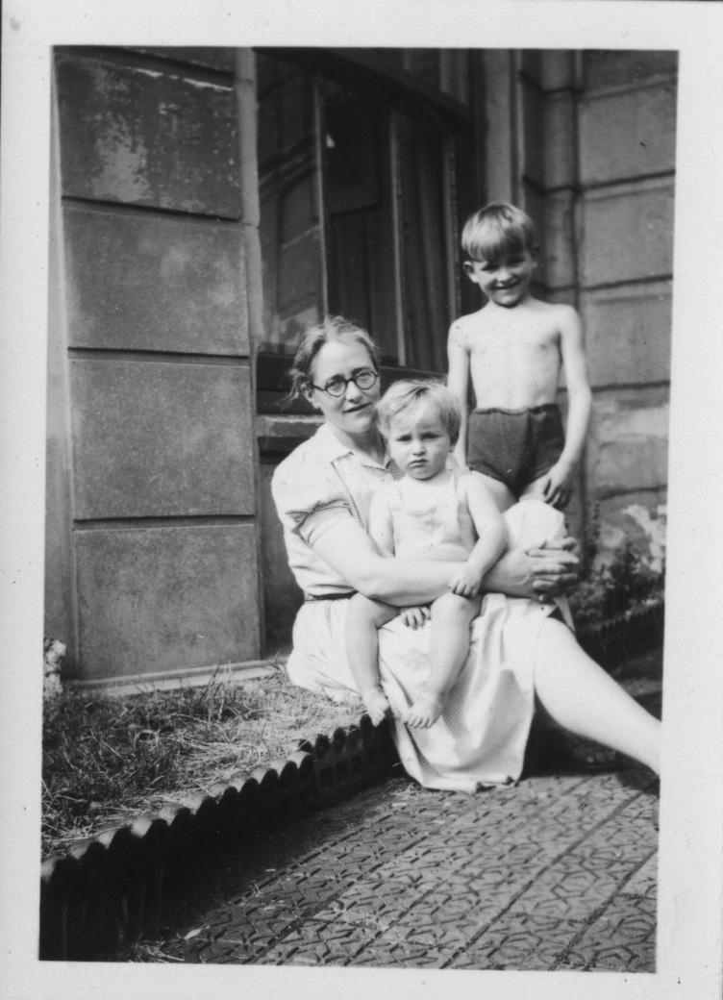
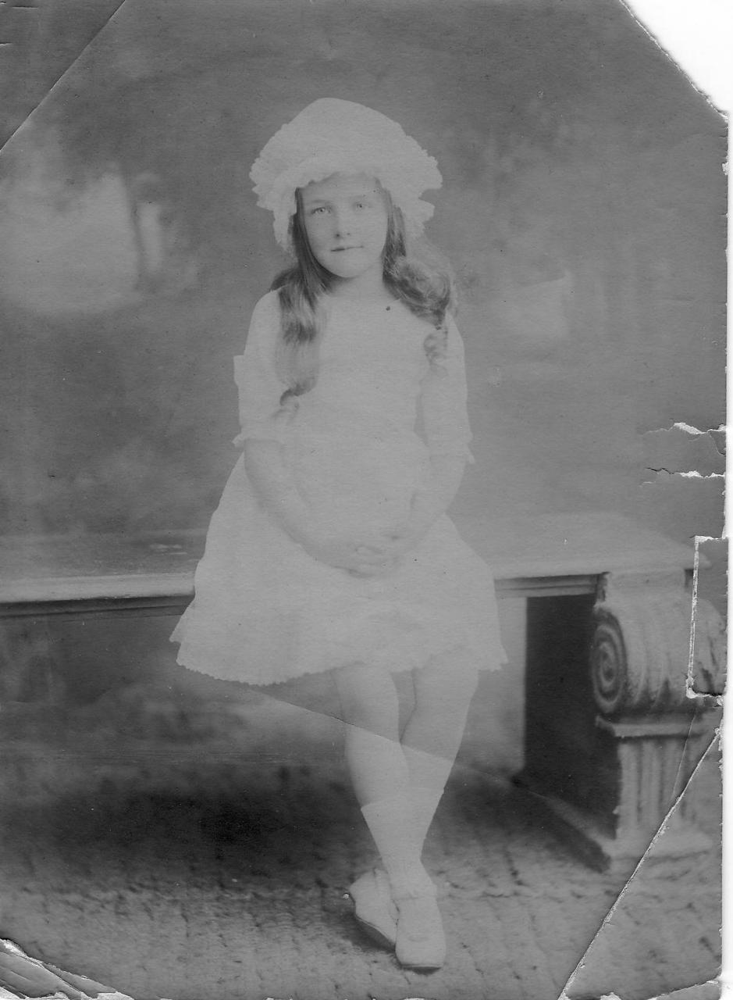
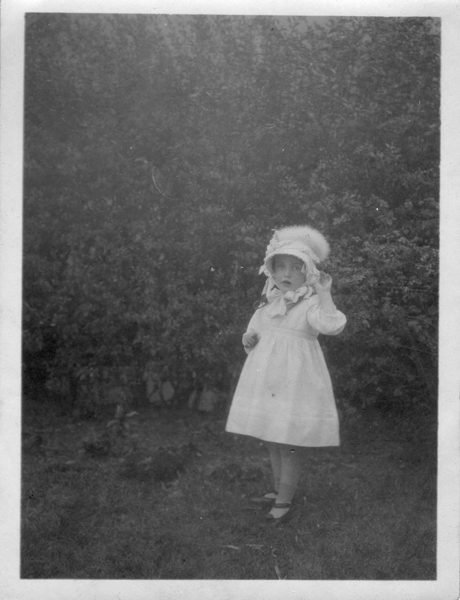

Scenes from my Life — an autobiography by Margaret Hinton (20 April 1911 – 9 April 1994).



Download the original Word document
Preface
Like many women, Margaret was the guardian of her family history - the Hinton family she married into and the Clark family she never left. Her recollections do not constitute a social history of by-gone days. Margaret was resolutely turned towards the here-and-now where one is too busy for mere nostalgia, an indulgence which she would, in any event, have resisted because of her appreciation of the unfairness of the past to women. To me she seemed to weave her stories to conjure up the people and places whom she loved best, soothing over their cracks, attentive to their quirks, often amused. To my French ear, the precision of her voice, the subtle rhythm of her phrasing and her cautious choice of words sounded seductively English. I did not wish to let go of this spell and also wanted to pay homage to her gifts to me: the model of a gentle, professional woman, ageing with elegance and a glint in her eye. I asked if I could record her reminiscing. Although perplexed, she obligingly agreed. Illness interrupted our scheme. We did not have enough time to fully edit together the transcripts of the tapes and I know that Margaret came to regret the oral style of the text.
Yvette Rocheron
July 1994
Christmas 1990
Scenes from my Life
I was fortunate in starting life with the feeling that it was very good to be a girl as I was born in Plymouth in April, 1911, the third child, and the first girl, which I was given to understand made me very important in the family as there were already two boys. So many women, apparently suffer greatly from the fact that boys were wanted and that they were girls.
The household was very comfortable, a middle class family of the time. We children had a nanny and a nursery maid and so we did not see a great deal of our parents. Very little of our father who was in a mysterious place known as 'the office' most of the time. He was running a business, as managing director of a food processing factory, in Plymouth at that time. He was a merchant, and had spent most of his life buying and selling on a large scale. Coming from Scotland, he went to Australia, and was there for many years, building up a most successful trading business. He had met my mother when he was trading with South Africa, for the supply of the first I think Australian tinned meat for the use of the British troops in the Boer War. They met in South Africa. He was many years older than she was. He must already have been in his forties, because he was born in 1857 and she in 1878. They were married in 1904. It was the beginning of the century when they met, She was fortunate, in that she had a beautiful voice, and her Birmingham family had sent her to be trained in London at the Royal Academy of Music It was unusual for a young woman, in those days, to be allowed to go away from home and get a training.
She sang very beautifully, and won a bronze medal for her singing, which I recently gave to my niece in Australia. It was one thing to get your LRAN, but in the eyes of her family it apparently was not quite the same to be a professional singer. But the family were happy for her to go out to a Protestant Convent in South Africa to teach the nuns to sing their Services at the Community of the Resurrection. She went out on the Union Castle Line with Mother Cecil, who was head of the Community.
My mother seems to have had quite a merry life. She told me she met one old lady over there who was famous for telling fortunes, and she had told my mother: 'You should not be in a convent,, you're going to have seven sons'. Well she did not, she only had three.
My mother's background was very English, from Warwickshire, but of a Huguenot family. Her maiden name was Jolly, and I believe there are still very successful Jollys in Birmingham running various businesses. She had accepted this chance of going out to South Africa, she must have been in her early twenties still, and she had not really decided on her future plans. Although she was
chaperoned, she seems to have managed to have a good time, because she met my father at a party. He came to Warwickshire to meet her family, and he gave her some very beautiful jewellery and some sables. He was a rich man in those days. According to my brother Colin, who was six years older than me, my father made two different fortunes in Australia, and lost them both! He was too honest and people used to diddle him. He had two partners who absconded. But at the time when I was born everything was very comfortable.
My mother went out to South Africa with him for a while, but she would not go to Australia, where he had built a house and would have been able to provide her with every comfort. Australia at the beginning of the century was not a good country for what might have been called 'respectable' women. Most of the women there had had the misfortune to get themselves transported. Now apparently, I am glad to say, it is rather creditable to have had forebears who were transported! In those days it was a pretty tough society, and my mother would not go.
So they came back to England, by boat, of course. They landed in Plymouth and they liked it. My father came from an Aberdeenshire sheep farm. On his tombstone it says that he was born in Auchindoir. My brother and I both looked for it in Scotland, but we had no luck. We reckoned it must have sunk back into the heather. My father was very determined not to go back to Scotland, because he hated the climate and after Australia it seemed particularly grim. As he and my mother both liked Plymouth, and he thought it would suit him for his business connections, they settled there. In those days Plymouth had good rail transport to London, it was not as far away as Cornwall, but it was still almost as far as you could get from Scotland. He used to say, with great guffaws, repeating a remark of Dr Johnson's, that the best thing a Scotsman ever saw was the road to England! My father, who was very Scottish, liked telling anti-Scottish stories, the same way that Jewish people like telling anti-Jewish jokes. He made his sons wear kilts all the same, for church on Sundays. They told me later how they hated it.
At the time I was born, I had my two elder brothers, and then Malcolm, my youngest brother was born, in 1913, two years after me. That was our family. We had a lovely nanny. I remember her with great affection and pleasure. She used to dress me up and give me frilly knickers and party dresses, and my straight hair was curled when I was going to parties, done up with rags overnight. Of course it all came out during the party, and by the time I got home it was straight again.
I suppose our society was the local business people, but I was too young to know. My mother used to go out calling, a carriage for her at the garden gate to take her. I was allowed to button up her boots, which came right up to her knees: they had buttons all up the sides which had to be done up with a button hook, and I loved this job.
We did not see a great deal of our parents. We had our meals in the nursery when we were small, except Sunday lunch when, I think, we all did get to the family table. We had nursery tea, the parents had dinner. We would be tidied up and sent down to see my mother in the drawing room, before bed time. I remember being taken for endless walks in the neighbourhood. We had enforced afternoon rests too, which were for the adults, not us, because we did not want them at all. I remember lying on my bed and kicking the wall with rage because I wanted to be out playing in the garden, but I was made to lie on my bed for what seemed an endless time but was probably an hour. That regime went on for some time.
After my younger brother was born he and I were a pair, and the two older boys were a pair. We were always known as 'the little ones'. As we got rather bigger, we did not like this so much. We acquired a governess as well as a nanny. The governess was a friend of my mother's when she had worked in South Africa, and met my mother there. Her name was Miss Kate Nicholson, her home town was Yeovil. She had been lecturing or teaching in South Africa and had some kind of breakdown of health. She was welcomed into our household as our governess. I still remember with what respect she was treated. There was none of this disregard that you read about. My father always treated her with great courtesy, and we respected her and liked her. She taught us well. School in the mornings, and then 'the walk'. It was an absolute ritual!
In the summer a house was taken out at Newton Ferrers, then a remote village on the beautiful estuary of the river Yealm, not far from Plymouth. The whole family went, everybody, including the cook, the parlour maid and Miss Nicholson, of course, and us children. Our cottage, well, it was a villa really, not a cottage, was called Sunnyside and it looked over the estuary. Now it is very much a yachting place. It was very peaceful then. Yes, I looked it up again. This was a great family exodus. We must have gone for a month or longer. We had to take everything for the whole household. Once, when we were there the Plymouth house was burgled: the burglars tried to set it on fire!
My father, so that we could be out in the country by the river, would take this tiring journey every day. He would go down the river, the only way to go to the train which came a few miles away at Yealmton, was to go down the river on a boat called the Kitleybelle. I remember him coming back every night, but perhaps he did not, perhaps he slept at the Plymouth house some of the time.
Everybody did this. Took the whole family away. To get there we had to make this journey, about seven miles I think by train, and then whiz down the river. I remember the excitement of going on holiday. The cab would come, it had a special horsy smell and there was straw on the floor. We would all be piled into this cab, and taken down to the railway station, and then to the little halt at which we got off, for the river journey. It was all very exciting, and one of the great events of our quiet lives. While we were in the country we had a row boat on the river and we would quite often go off on picnics with this boat.
We were packed in rather tightly in the cottage. The cook had to have me in her room, because there was a very strong gender division in those days. It would not have been thought nice at all for me to have to sleep in the room with the three boys. When, at one stage, I do not know which year, we all got the measles in the Plymouth home and we had to be in one room - because it had to be darkened - a screen was put up for me so that my brothers could not see me in bed. Incredible, wasn't it? Of course, the boys had great fun knocking the screen over as soon as the adults had left the room. My poor mother, one after the other, we had the measles, all four of us!
The governess taught Malcolm and me exactly the same. But Colin and Kenneth went to a prep school in Plymouth and later they went away to board at the Dragon School, Oxford, and then to public school. Malcolm did not get to prep school because the money had run out by then. I do not know what would have happened if the family funds had not dried up as they did.
My mother was ambitious for her sons. She herself had been to King Edward School in Birmingham, which was and is a very good school. Plymouth College did not seem to her good enough. She wanted her sons to try the round of scholarships to public schools, which in those days was the only way of helping to pay the fees. My father, apparently, was willing for her to do this. I remember Colin did very well, I suppose at age thirteen, when I would have been six years younger, he came top of the roll at Winchester which must have pleased the parents. He must have been well taught at both his first schools to get this very valuable scholarship to Winchester. Kenneth, who was two years younger, got a scholarship to Charterhouse, so they both went off with scholarships. It was a very hard life at public schools in the 20s. It was after the 14-18 war and the food was very bad. They used to complain about it very plainly. It was considered to be toughening and good for boys: we were too soft with them. Life was pretty stern, and they were not expected to complain, stiff upper lip and all that. They called my father 'Sir', I remember. I did not have to call him 'Sir', I could call him 'Daddy'. Not because I was little, because I was female.
When Miss Nicholson. came with us in the summer, she used to take us for lovely walks - there was beautiful country around there. There was a walk right along the cliffs. It was a seven mile drive. It had been made by a rich, eccentric old lady, so that she could have her carriage driven along it, and see the wonderful view when she was. no longer able to walk. The seven mike drive is still there, I think it's now part of the National Coast Path Park.
We never called her anything, of course, but Miss Nicholson. She was the archetypal English spinster. Thin as a rake and straight as a ram-rod and very knowledgeable. I am grateful to her, because she really made me enjoy poetry, good poetry, very early on. I still remember much of it:
The curfew tolls the knell of parting day,
The lowing herd wind slowly o'er the lea,
The ploughman homeward plods his weary way,
And leaves the world to darkness and me.
Now fades the glimmering landscape on the sight,
And all the air a solemn stillness holds,
Save where the beetle wheels his droning flight,
And drowsing tinklings lull the distant folds.
I shall not bore you any more! Thomas Gray is not read any more. Miss Nicholson gave me a great deal. But she had one rather trying habit which my brothers laughed at. When it was hot summer weather on our walks, she would put bracken underneath her hat. She said it kept her cool, and she really did look most extraordinary. Malcolm and I did not think it polite to laugh, but Colin and Kenneth did. She had virtually nothing to do with them after they went away to school.
My father decided during the 1920s that he would like to have some kind of premise on which fruit °could be grown for Devonshire Products and Supplies. He negotiated with Lord Morley who lived out at Saltram, near Plymouth, to take over from him, for rental, a beautiful Victorian kitchen garden, which in the manner of those days, was quite a distance from the Queen Anne house and was built as three great squares with brick walls, double brick walls for fruit growing, because they held the heat. We moved out there. The gardener's house, which was also a Queen Anne building, was somewhat enlarged for our use, and some potting sheds were turned into my mother's drawing room.
Malcolm and I were so happy there, because it was such a lovely place, and we could get right away from all the grown ups and play in these squares. If we did not want to hear when we were called, we could decide not to. We always went in at once if it was meals, but if we were being called in for something else, we were not so keen
My mother, I remember, had to decide on whom she would call in the neighbourhood, and where we would go to church: both very important in those days. Lord Morley's daughter - Lady Mary, a war widow - was rather doubtful whether she should call on us or not. Were we trade or gentry? But then she came and left her card, which pleased my mother. Evidently my mother thought it was time I was introduced to these finer points of social life, and when she paid her requisite return call I was taken along, I was sort of dusted down, and put into my best clothes and gloves and taken out to call on Lady Mary, who received us in her boudoir. It was not the great drawing room of the house, it was her own intimate room. This is now shown to visitors. When I visited Saltram House a few years ago I was rather interested to hear they still had copies of the accounts that were kept of the produce my father supplied from the gardens. Because part of the bargain he made, with Lord Morley, was that every day he would send fresh vegetables and fruit in season up to the big house, which would be paid for. A smart groom came down every day, in a little pony cart to fetch this, and Malcolm and I always used to watch. The horse arrived, the gardener stacked the food on.
Whenever we called on the big house, I was rather intrigued, I think. I sat there primly, having been told whether to take my gloves off for tea or leave them on.
and all the other rules. My mother, if you please, had a hat with a veil, and gloves that came right up her arms. To take tea you rolled the veil, not all the way up, but up as far as your nose, so that you could nibble a cucumber sandwich, believe it or not. And the gloves, you did not take them off either. They were turned back at wrist, there was a button-hole there, so that you could pick up the food. I just had to take my gloves off, and I certainly did not have any veils. I probably did not take my hat off. Women wore hats in those days, even girls.
There was the question of how to get us taught. Miss Nicholson, I think, had retired by this time. Malcolm and I were sent to Mr Seccombe, the rector at Plympton Saint Maurice. We liked him very much and enjoyed our work with him. It was quite a long walk to the Rectory though. My mother was right, I think, not to send us to what was known as the Board school, the local board school. We would have had a very grim time. It just was not the custom to send children brought up as we had been.
Plympton was a big village, almost a town. There is an old rhyme about it:
Plympton was a market town
When Plymouth was a fuzzy down
It was a very old settlement, a big village, with a tough, elementary school. I think my mother was right, we would have found it very hard going.
We went to Mr. Seccombe, whom I suppose my parents paid, and he taught us English and Latin and some History and Geography. But we did not learn any French and he refused to do any maths with us. Our brother Colin had to teach us by post, from Winchester. We received our lessons and we sent them back for him to mark with the result that, when I went to school for the first time, at sixteen, I was well on in algebra and arithmetic, but geometry was not so easy to teach by post.
My father continued at his office. It was about six miles away and he took the train into Plymouth every morning. There was one thing we liked very much. On Saturday afternoons, he took us shopping in the village and bought us sweeties. We went every morning to Mr. Seccombe, through the week, as I remember, walking quite a way to get to him, on our own. Nobody was frightened about children going on their own in those days. There were not the motor cars to run you over, nor the marauders to upset you. We walked through the village on to the next parish, where Mr Seccombe was Rector. We worked with him for what seems to me a long time. I do not know which year we went to Plympton, but I do know it was about 1925 or 1926 when that came to an end.
In spite of my father's endeavours, the garden did not work out. There were too many expenses, and sending the produce up to London overnight - there were very efficient trains in those days- was quite difficult. I used to help my mother, - there were a lot of daffodils at the top of the garden- I used to help her pick and bunch the daffodils for sale on the London streets. They went up overnight and they were sold the next day. They were taken to the local train, and into the main station in Plymouth and from there they went straight up to London and sold the next day in Covent Garden. I remember very well making the bunches, so many daffodils nicely arranged, so many leaves in each bunch. We tied them with raffia, and an incredible number of bunches would go into the flower boxes which used to go to and fro to London. I would help too with picking the fruit. This was when I was older. When first we went there we just played - after we had been to Mr Seccombe and done our homework. My mother helped in the flower garden - a very beautiful flower garden, I have a picture of it. At first there were seven gardeners doing all the, work, and then gradually they had to go. It was quite obvious that things got very difficult. He was too honest. When first we went there his factory was making jam for the Forces; he put too much fruit and not enough carrot and turnip in his jam as some did. He was altogether a very honest man, my father. He was badly treated by his friends. He was a real merchant, and had traded all over the world. Things got worse and worse, and my father must have been very distressed, because he had always been successful, all his life. We children were aware that things were not like they had been. There was only one little maid, and that was when I began to do much more in the house. Before then, going to the kitchen, when we lived in Plymouth, was only by invitation. Cook would invite you! I learned a lot from watching her. We had a cook when first we went to Saltram and staffing gradually came down in garden and house. Finally we moved away to the country, near Exeter. By that time, I think, things had got pretty bad for my father. He had had to close the business down, there was very little money. But, of course, one did not tell children these things, not in those days. All we knew was that we were moving away.
By then, the boys must have gone on to university. Colin, who was born in 1906, went to Oxford, to Brasenose. There again, both boys got university scholarships, which was the only way of helping to pay in those days. Kenneth's scholarship was to Corpus Christi, Cambridge. So I suppose that paid quite a lot of their university expenses. I do not know what my parents had planned for me, but I never felt that they were prepared to give me less than my brothers, which again was unusual in those days. I am quite sure that was not in their minds. There just was not any money for any of us, and that was not their fault. Malcolm and I were having this rather curious time with Mr Seccombe, and with Colin and his maths. But we were taught.
They had to give up the garden, which went to wrack and ruin. I do not think my father could get anybody to take it on. It was allowed to go, and there are now houses built inside the beautiful brick walls. It seems a great shame, because it was such a beautiful garden. The National Trust took over the big house, but would not take the garden. Nowadays the Trust might have taken it as well, and cherished it, but it just went.
We went to a very much humbler dwelling about six miles from Exeter, called North Cotley. My father was ill by then; he was cold and very distressed. He rented this property from the local landowner, and with my brothers' help, he set to work to dig the front garden, which was pasture. We were allowed to dig it up and plant it. It was virgin soil, so the crops grew very well. There was no tutor any more. All our work must have become correspondence. I am not at all sure how it was done, but structured learning went on. Then in 1927 my father died. He was seventy. He had had a very busy, hard life with a great deal of travelling. I have often felt sad that he must have died feeling very disappointed. He was expected to leave my mother comfortably off, but she certainly was not. She was still only in her late forties. She was born in 1878 and was left a widow very young. He was ill only a few days, he had trouble with his teeth I remember. Was there a sort of general collapse, probably heart failure? I was sixteen by then, Malcolm was thirteen. We were very fond of him. I never remember, ever, being scolded or even rebuked by him. He was a very nice man. When we were younger he used to give us these Saturday afternoons, take us down into the village and buy us trifles, buns and things, which we loved. I suppose by that time there was no domestic staff, I imagine that was my mother's afternoon off. He would tell us the most wonderful stories about his travels, places he had been to. He was a great story-teller, and we very much enjoyed these tales of his. I remember him vividly and our pleasure in walking to the village with him. We led a very secluded, quiet life. I remember that later, to go into Exeter from Cotley, and have tea in a shop was a birthday treat.
My mother had taken to writing in her forties and did it very well. I have got a book of her stories. In those days the Guardian was called the Manchester Guardian and every day it had a short story on the back page. My mother wrote many of those stories. One was paid the very large sum of £5 each, which was a lot of money then. She used a family name, Marion Yeulett, she thought it sounded more interesting than Marion Clark. There still are Yeuletts in Essex. Her grandmother was an Essex farmer's wife, and she used to go and stay in this big old farmhouse when she was a little girl. She always loved going to Essex, so she used that name. Her collection of short stories, unfortunately, was published just at the beginning of the Second World War so they were virtually unnoticed.
At the time of my father's death in 1927 the boys were away at school or University, and Malcolm and I were sent to school that autumn. Malcolm was sent off to Charterhouse. I do not know who or how it was paid for. Lord Meston, who had been a playmate of my father's up in Scotland all those years ago, and had since become very successful, came to the funeral and did all he could to help. It was in August my father died, I remember sweet peas, we had lots and lots of them in the garden. We could not afford flowers for the funeral, but we had all these sweet peas, and lovely bunches were done with them. My mother, who was very clever with her needle, made, almost overnight, a black suit to wear. The village came. I think it was more the custom then, although we had not lived there long. It was a beautiful August day. James went not long ago, with Sasha, to visit his grandfather's grave in Holcolme Burnell Churchyard.
In September my mother enrolled me at the Maynard School in Exeter - a good old girl's grammar school. I do not think she had ever wanted me to be a boarder. That maybe the difference as regards gender. She was earning some money and doing useful work as the honorary secretary of the Accra Diocesan Association, which was a missionary organisation collecting funds for church work in Africa. One of her best friends, a family godmother of ours, was the sister of the Bishop in Accra and my mother went out to see him. I have got a lovely picture of her with all these black ladies around her, my mother sitting in the middle alongside the Bishop. She went out there to start the Mothers' Union if you please, for these ladies of Ashanti. The Mothers' Union still flourishes. It is terribly Tory, anti-divorce and anti-abortion, all for the sanctity of marriage. Perhaps the blacks have thrown it out by now! But my mother got away, which was a good thing, because all this must have been deeply distressing for her. The only way she could go abroad was for me to be a boarder for a term.
It seemed to me incredible that my fellow pupils made such a fuss about unimportant things. I must say I found this fascinating. They all seemed so young to me, these girls of my own age. I had been running the house for a long time by now, because my mother could not cook. She never learned, and boys did not cook in those days. So I had been running the house for some time at sixteen, cooking on a great big open fire with things hanging down the chimney. Quite primitive.
I found it very strange to sleep in a dormitory. As the only girl I had always had a room of my own. I made some friends. Sally Mills, who was at my 80th birthday party, is a friend of those days. Sally was one of the first people I saw when I went there, and she was really the leader of our year. I went into the upper fifth, which was the form which was going to do the Junior Oxford Certificate. She was so nice to me. They all were. I think they were told by the house mistress that I had just lost my father. I had no feeling at all of being rejected. I liked the school work, and I found I was well up in quite a few of the subjects. I had read more than most of them, and we had very good literature teaching, with Miss Lane. When I discovered she was still alive last year - she was 99 - I wrote to her, I was fond of Miss Lane. She seemed to me incredibly old then, she was only forty seven! But the maths mistress, Miss Hartley, was a very different cup of tea. She was a Cambridge Wrangler. She would not have been teaching in a girl's school nowadays, she would have been teaching in a University. She was a very good teacher, gave me special coaching because, as I said, my maths was very lop-sided.
I do remember boarding school as being very strange. I was not scared. I was rather intrigued. I was jolly glad something was happening at last. We had had a very dull time, Malcolm and I, because there was no money for us to do anything else. I believe my fees at that time were £15 per term. They knew that my mother was very badly off, and they gave me a scholarship. I do not know how much of this vast sum they let her off! I had to go and clean up the glassware in the lab to make it up. I never did any science nor any French at any time. It was too late to start me off, but I did well with Latin at the end of the year, because I had done it for longer than most. I was there at the school for several years, only as a day girl once my mother came back. I went to and fro on the train, always arriving in the middle of the first lesson, so I missed quite a lot of that. I was at school from 1927 to 1930, and I think that I was well taught. According to the limitations, because there were limitations in those days, the school was quite advanced. Definitely, of course, with the background I had, there were gaps that never got filled, but I enjoyed school. I made some very good friends who stayed with me all my life. I have another one down in Cornwall whom I see sometimes. I have very happy memories of school. The clothes were incredibly ugly, but they were comfortable. A horrid tunic made of navy serge, a sort of pinafore thing, a white blouse, viyella in the winter and cotton in the summer, and long black stockings, all pretty hideous. We had to write essays for Miss Lane, which demanded something from us.
We had a head mistress who had very little to do with us, a rather trying woman. She did not approve of many things my family stood for. It came to her ears that Colin was Chairman of the Labour Club at Oxford. This really shocked her. In 1929 there was an election, when Malcolm and I were still at school, and in the summer holidays we were able to go electioneering down in Dorset where Colin was standing as a Labour candidate. He could not have possibly have got in in those days. Farm labourers hardly dared to vote at all. It is supposed to be a secret ballot, isn't it, but they had to be very careful with what they said and did, so that nobody thought that they would do anything more than vote the way the squire would have liked. It was tied cottages and tied jobs, and if they caused offence they would have been out on their ears, and there was not even any dole then. We had by that time an air-cooled Rover 8 which you wound up in the front. We drove about Dorset and had a most lovely time. Somehow this came to Miss Dixon's ear and at the beginning of the next term she sent for me: 'I hear you have been saying that your brother is standing as a socialist candidate,' she said in a voice some people now reserve for commoners, 'in Dorset. Can this be true?'
'Yes, Miss Dixon'.
'Oh. You may go.'
Her disapproval was obviously very strong. Then there was the time when I met my brother Kenneth in the High Street in Exeter after school. If there was one crime more serious than to be seen eating an ice-cream in school uniform, it was speaking to a boy. So I was summoned: 'Margaret, someone saw you talking to a boy going home the other day.'
'Yes, Miss Dixon, it was my brother Kenneth.'
I felt once again that she did not approve of me at all. My father certainly was not a socialist. I remember him at the time of the Russian Revolution. 'They are just a bunch of Bolshevik German Jews.' He was disapproving of the Bolsheviks, the Germans and the Jews. I am sure he was anti-semitic. But he was such a nice man. I remember him going on, 'the Bolsheviks had their women in common'. I was rather puzzled, what did 'women in common' mean, I thought to myself.
When I left school, I was considered very fortunate by my fellow pupils to have got into the teacher training college of the old L.C.C., the London Day Training College. It is now the Institute of Education. It was a mixed college, rare at the time. I think it was the last year they took people for two year training, for primary work. After that it was only graduates. I do not regret that I did not graduate and then do a training course, because I would have gone in as very much a bottom of the pile in a girl's grammar school, whereas with my primary work I was able to go into village schools and do all sorts of amusing things. I do regret missing the fun of the university, but not from a work point of view, purely from a personal and social point of view.
The college meant London, and my mother had rented a little house in Westminster, between Victoria Street and Vincent Square, now a very smart area. I stayed there with her for a year, and I did not like it very much. I had to do all the housework, because she could not, and do my work as well, and I found it difficult. After that I had a happy year when I lived with my brother Malcolm in Hampstead.
I found college life rather alarming, because it was all so different, and one did not get the support of school. I still think that not enough help and protection is given to young people, if they go straight from school to university or college. They ought to have more pastoral care for those first few months. I remember feeling very lost. I made a friend, Bessie Appleby, who was also lost. The college at that time was doing something rather odd. It had some two-year people like me and Bessie, and it had some of these haughty graduates who were doing the one-year diploma course. They despised us. We were eighteen, nineteen year olds and they were graduates. There were the two of us who were straight from school, and there were these two haughty graduates. They were so nasty to us. They despised us, sailing off to lunch and never asking us to go with them. I still remember it as a wonderful example of total discourtesy. Fortunately I had Bessie, so we were able to laugh at them.
At college I realised that I had done virtually nothing in the artistic sort of way - drawing, painting, that sort of thing. I remember my triumph when I finally managed a linoleum print of a tree which my college teacher, who was more or less despairing of me, was able to say was excellent. She had seldom got someone who had hardly ever held a pencil or tried to draw anything before, I think.
I remember that in order to get the grant, which was the only way I could get to college, I had to sign a form to say that I would teach. I remember doing this with great indignation. As I signed it I thought that they had no right to ask this of me. 'I am only nineteen, I am under age, they can not hold me to this.' After which I taught for some fifty years or so and enjoyed it! There really was only teaching available to me as a career. I do not think I told you that I had difficulty getting into the course because I am short-sighted. A fierce woman doctor at County Hall tried to turn me down. I had to go for a medical exam before they would accept me at college, and the doctor said my sight was too short and I would not be able to see the children at the back of the class. My mother, who was with me; said indignantly: 'Well, what is she to do then?', and this woman replied 'Oh, she could be a landscape gardener'! I remember this absurd conversation. But my mother, who was a very formidable woman, let me tell you, was not having it at all. She went to the man in Exeter who had supplied my glasses and he gave her a letter saying I was slightly myopic. My health was A2. There was nothing else wrong with me. This woman would have prevented me if she could without turning a hair, a very tough lady! There was very little for women to do then. I certainly did not want to be a typist. I would not have minded being a nurse but my mother did not like the idea of that. Nurses had a pretty hard life then. A teacher was the obvious choice for me and, with a grant, training college was financially possible.
Once I had settled down at college I began to enjoy the course, but I was scrabbling along, because of the gaps in my rather curious education. I was very young. You can not imagine how young a nineteen year old was in those days, rather like a sixteen year old now. Life became much pleasanter after I had escaped from my mother's house, and was able to share a flat with Malcolm. I believe the landlady thought we were not brother and sister, which was rather funny. In those days, that would have been very shocking. My mother was reluctant for me to go, I believe.
Malcolm had hated Charterhouse, not surprisingly, thrown into it like that. He got himself into journalism, and later worked on the Daily Herald. He did not go to university. He would have been one of these media men, you know, travelling all over the world like John Simpson, that sort of person. By the time he was conscripted into the Army he was a very good journalist.
We were very poor by modern standards, we worked hard, unemployment was severe and we knew that only with good qualifications was there a chance for a job. We went often to the cinema, seats were very cheap, and we could save the gas bill at home. Of course, the back row was famous for a cuddle, if one was so inclined. We entertained one another, music would be made by ourselves, banjos were popular, and I sang the songs of the day and older ones:
My baby's gawn down the plug'ole
My baby's gawn down the plug...
I had great fun and some of us had our specialities:
It's the same the whole world over
It's the pooer wot gets the blame
It's the rich wot gets the gravy
Ain't it all a bleeding shame?
She was poor but she was honest
Victim of a rich man's whim...
The children used to like that one. I remember the hand-wound gramophone with an enormous horn, played with steel needles that had to be changed for each record. There was seldom room for dancing in our cramped flat and the 'Dancing cheek to cheek' of the song was rather daring.
I was fortunate with having Colin and Malcolm who knew interesting people like the early film maker John Grierson who made Drifters, a famous film in this day, about the herring fleet. I knew Basil Wright, a member of the Crown Film Unit, who made Song of Ceylon, another 30s film. In this period, it was beginning to dawn on us that the Great War was not the 'war to end war'. Fascism in Italy and in Germany was very alarming, but when the Oxford Union voted in 1933 not to fight for King and Country, it scandalised a lot of people. I had friends who went to join the International Brigade and never came back from Spain. Colin brought many, left-wing people to the farm house in Devon, and make plenty of cooking and washing! G.D.H and M Cole and Naomi Mitchison and her husband were among them. We were in a lovely place, half way between Exeter and Dartmoor, and long walks were the order of the day. Now you are always being pushed into the hedge by cars. In the local pubs, we were known as the peculiar people from London who brought their women to the pub, a habit unusual in country circles at the time. We had to go into the lounge bar, of course, the locals would really have resented any woman other than the landlady or barmaid in the public bar. Looking back over sixty years, I remember that time with great pleasure.
But at the end of my course, in 1932, there was almost total unemployment for young teachers. Of my year, only the top six - of whom I was certainly not one - were given work by the L.C.C. But somehow or other I managed to go on supply at St. Dunstan’s, Stepney where I had a most interesting year. The headmistress, Miss King, wanted to keep me but she was not allowed, because I was not holy enough. I could not say that I went to church regularly, when the governors interviewed me. I should have cooked something up. I was young then, I did not realise. I said, when I did go, I went to the cathedral because I liked the music, which was quite true. Miss King did try to keep me. She gave the children hell-fire, hot and strong but she was a very good teacher. She warned me: 'We do not get the clever ones here now, you know. They're the Jewish ones and they won't come to a Church School'.
It was a girl's school. It was one of those grim three-tiered buildings. The infants were at the bottom, and then the girls and the boys were on top. I think they were allowed to be together when they were in the infants, but not after that. I had a class of little girls and I was very fond of them. They bought me dead flowers from dustbins, as presents, because they could not get hold of any fresh ones; I enjoyed myself with them, but Miss King kept a very sharp eye on me, checking that I did my register, very important! I am grateful to Miss King for many things. She taught me to always clean the board before I left the room. It annoyed me in my day when young teachers left me a dirty board! She told me: 'When you get parents coming in, just bring them along to me, my dear, do not try to deal with them yourself'. Of course, I thought I was very grand, and could cope by myself, oh yes! When I saw my first angry mother, she came up the stone steps into my classroom. Miss King's room was just along the end of the passage. Up comes this mother. She was wearing a man's cap backwards on her head. She had rolled up sleeves, and great fat arms akimbo. I do not know how I had offended her daughter, but I found myself backing very rapidly down that corridor, saying: 'I think you would like to see Miss King, wouldn't you?' I got her into Miss King's room just in time. Miss King had her out of that room totally demolished, as meek as milk, within a few minutes! I admire her skill on that one. All she said to me was: 'Well, I caught that one my dear, for you, she's pretty fearsome'.
I had had a wonderful year because we had good friends in London. One of my brother Kenneth's friends came, Basil Wright, who became a film maker. He worked with Grierson and made 'Song of Ceylon'. Basil had often been to Cotley, the family home, and his mother lived in London. They had a beautiful house in St. Johns Wood, in Acacia Road, and they entertained quite a lot. I was lodging with a friend, by now, Jean Richardson in one of those dear little houses above Camden Town station, with steps up to the front door. Most of them have been knocked down now. They were lovely houses. I went down to Stepney on the underground every day. I was delighted, by the way, to find the Metropolitan Railway mentioned in a book I have just been reading. I had no idea it was opened before the end of the last century. My mother told me that when she was at the Royal Academy of Music she travelled on the Metropolitan, and it was full of smoke because there were steam engines underground then. But, of course, it was not steam by my time. It was a long journey down to Stepney every morning, and you had to be in good time, because at ten minutes to nine Miss King came into the Staff Room. She used a round black ruler, and red ink, and drew a line across the book we had to sign as we came in. If you had signed below the line you had to see her and explain yourself.
Lots of exciting things were happening. At that time all the clever-clevers of the day met at the Cafe Royal, all the intelligentsia were there. Among other delights I had some singing lessons - I had always wanted to do that - with old Madame Tosti. Tosti had been the Domingo, or the Pavarotti of his day. After his death, his widow came to England, had a house in Belsize Crescent which my mother afterwards took over from her. Madame Tosti gave me some singing lessons for free. She wanted me to go on professionally. My voice was alright, but I had not got the musical education. I did have few lessons at the Guildhall School of Music later on, but I had to take the cheapest teacher and I realise now that she was not much good. I was a high soprano and she tried to turn me into a contralto. In my day, I could sing top E. I loved to sing, but there was absolutely no possibility of getting anywhere. There was no-one to pay for lessons, I would have had to have been a student again, and acquire the necessary background and musical knowledge. My mother had taught me to play the piano, but there was absolutely no way I could have followed her to a music school.
I had a most exciting year. I liked my little girls in Stepney. I had good friends. I think I first knew Fifi then. I knew her well before she married Kenneth. We went to a Ball, I remember it very well. It was at Grosvenor House, and I very much enjoyed it. I had a new dress, and it was great fun. All sorts of other interesting things happened. I enjoyed the teaching. That was the end of an episode for me.
I was out of work for quite a while. There was in those days no dole for us. So my brother Kenneth, who by then was lecturing at a college in Leicester, after leaving Cambridge, took me in. He had started at Cambridge as a classical scholar, and then did economics. He could have had a very good job with United Steel, but he did not want to be an economist, he wanted to farm. We had by now this small family farm at Cotley in Devon, which belonged to my brother Colin, who had been able to buy it very cheaply from a man who had been a major in the First World War. This major had set up a chicken farm, as many of the ex-army people did in the 1920s, it was a complete failure! It was sold for very little, and Colin was in a position to buy it. That was the new family home. My mother was there some of the time; and we all met at holiday times.
Malcolm became a sort of apprentice on the Leicester Evening Mail, learning his journalistic skills. Kenneth was very good to us, and kept us both on his small salary. As the housekeeper I had thirty shillings a week to feed us all. In those days you could buy a lot of food for thirty shillings. The flat was in the Narborough Road, I was very glad to have something to do, but it was not a very thrillsome time. However, I did manage to get a temporary job, for two weeks, on a research project for the telephone company in Birmingham. They were employing agents to visit householders and find why they had not got a phone. I had to go over to Birmingham from Leicester every day, and make my enquiries in Erdington. I had to go to the local library and look people up in the street directory, so that I knew their names., and that they had no phone. I would then knock on their doors and persuade them to answer a questionnaire. Some of them, of course, shut the door in my face, but most of them made me very welcome. For the most part, they could not afford a phone. I was paid £7 a week, which was quite a high wage for those days. I had a little money, at last. I well remember the glee with which I bought a suit that I had been eyeing for some time in a shop window.
In June 1934, almost a year after I had left Stepney, I at last got a teaching job. A friend of my mother's, who did voluntary work for Great Ormond Street Children's Hospital asked me to go to the country branch of the hospital at Tadworth to work with the children who were all long stay patients. She was prepared to pay me £100 a year. There was no official schooling for children in hospital in those days. Of course I was soon off to Tadworth, a Surrey village then, and on my £2 a week I was able to pay for lodgings in the village, and still have some money in my pocket.
The hospital was in the most beautiful and extensive grounds, and the children, many of whom were T.B. cases, were nursed out of doors in the day time. Their beds were pushed out of doors in all weathers on to an open balcony. It was fine in the summer and early autumn, but not so good as winter came on. Poor children, they were so cold. I was cold too, working with them in an overcoat and gloves. But there was a beautiful autumn that year, and the children who were not in bed were able to wander with me in the grounds. I enjoyed the work there, and helped to relieve the children’s' boredom and homesickness, I think.
The sister in charge of the unit did not like me at all, because I was not under her jurisdiction, but that of the resident doctor, a very nice woman. We became friends, and she helped me later on, when Charlotte was born. I believe, although I did not know it at the time, I caused Sister great offence by putting up a Current Events board on which I put pictures and cuttings from various sources, including some from the Herald, which she regarded as a dangerous socialist rag.
I was not at Tadworth very long. My brother Colin, who was by now teaching Economics at Cambridge, must have had a word with his friend Henry Morris, the Education Secretary for Cambridgeshire. It was suggested that I should apply for the post at Fen Drayton school, where there were, at that time, eleven pupils. I was called for interview, and given the job, to my great delight. Of course, I could not leave the hospital until another teacher had been found and installed. It was at half term, in February 1935, that I finally arrived at Fen Drayton, to take up my post on a most dreary day.
Fen Drayton is about 10 miles away from Cambridge, a mile or so off the old Cambridge-Huntingdon road. The history of the school is interesting I think. There were schoolmasters there in 1590 and 1602. By 1840 or so, a church day school was established with 42 children maintained by local subscription. The mistress was the elderly wife of the local butcher. In 1860s, a schoolroom and a teacher's house were built, and that was the building in which I worked. It could accommodate 100 children, so I and my eleven were rather lost in it.
Henry Morris was one of the most progressive people in education of his day, and I think he was wishing to get some younger and more recently trained teachers into the small village schools in his care, but was often frustrated by the local clergy and managers, who were looking for good church men and women to run the village school. Fen Drayton, unusually, was not a church school, but belonged to the County, so he had more power. After I had been appointed, he said to me, in private: 'Go to church if you can. If you want to go to a pub, don't go to one anywhere near your village.’ This was very sound advice.
I arrived to find the supply teacher sitting knitting at the desk: 'You won't find a lot to do here', she said, 'I have got a lot of knitting done, and if I want to get into Cambridge, I just close the school and get the bus.' Needless to say, that was hardly my approach! It was a wonderful opportunity for a young teacher. I had so many things I wanted to do with the children, and did do. They had been bored for years, I think, and were very responsive, and learnt well. One clever girl passed the exam for a fee place into grammar school in Cambridge, then the only way up the educational ladder, if fees could not be paid.
Then came the 1936 Land Settlement. Unemployed miners who volunteered could be considered for a short training as market gardeners, and a house and land could be rented to them, on which they could grow crops for sale to a cooperative. Things changed. Pleasant brick houses went up with remarkable speed, each with its own plot of land, positively luxurious, with piped mains water and sewage. There was discontent that these Durham miners should be given this opportunity, while the locals, with their much greater horticultural skills, had to battle on with their decrepit tied cottages, and their miserable agricultural wages.
The school got bigger and another teacher came to help me. I moved to Linton Village College in September 1937, but I was sorry to leave Fen Drayton. I had been very happy there.
It was while I was at Fen Drayton that I first met Howard. Henry Morris had invited my brother Kenneth and me to dinner at his flat in Trinity Street. Henry was a bachelor, and his housekeeper was a wonderful cook. We had a very good meal, and had got as far as the coffee, when a young man, evidently an habitual caller, came round the door. He seemed all eyes. He had hoped to get some food, because he was practically starving at that time. Bandits had raided the mine in Mexico which Howard's father ran, and he could send Howard no more money. There were no grants in those days. If you wanted to take a Ph.D. somebody had to pay, and Howard was really living on practically nothing. He told me later that he liked the way I sat with my fingers in my mouth - a habit my mother had done her utmost to discourage: 'Margaret! Take your fingers away from your mouth. I don't like that.' Apparently this trick of mine amused Howard and he said to Henry afterwards:
'Do you think I could ask her out?'
Henry was most encouraging:
'Yes, write to the girl.'
I got this letter, and we went to the pictures together in Cambridge. A romance started. He used to cycle out to see me at Fen Drayton. I had a cottage at the end of the village, a nice cottage. He cycled out ten miles each way from Cambridge. He would wait for me in the front garden, and the children, coming past out of school would call out 'Teacher's coming'. We had to be very discreet and to mind our P's and our Q's. Teachers were not supposed to have followers. We were careful to have our pleasant weekends in London, not in Cambridge.
My cottage was half an old farmhouse, it cost me five shillings per week, considered rather a high rent in the village. The water pump was near my back door. There was no tap water, no electricity, no drainage, no sewage. There was nothing. My mother used to find it most embarrassing when she came down from London to see me. She had to go to the privy at the end of the garden and she did not like that. It was only an earth closet. During my first few days, an old man had come to the door and had offered to empty my bucket for sixpence a week. This, apparently, was customary. I was used to earth closets. We had got them when we first left Saltram. So they were not a novelty to me, I was grateful for his service: 'I'll put it under the rhubarb for you, miss, to help it to grow.' But the wee just went down the local drain.
In my cottage I had a coal fire. It was very comfortable in my sitting room and there was a little coal range in the kitchen. All water had to be carried and for light I had candles, of course, and an Aladdin lamp which was considered rather a novelty. The kind which worked like a primus. I do not know if they are still made. But at that time they were a great advance, because it was difficult to do much by candlelight or wick oil lamps - even reading was sometimes difficult, sewing and writing even more so. I had a telephone. There was one at the doctor's, one at the parson's and for the rest of us, one at the Post Office. The Postmistress listened in to every word that was said, so people used to come and ask if they could use my phone, which I always let them do.
Several of the women in the village came to me, quite desperate about the endless babies they had to have on their miserable incomes. As a young unmarried woman, I was not expected to know anything about 'that sort of thing', but I could tell them about the Clinic that had recently opened in Cambridge. They were able to make an appointment on my phone, away from the Postmistress. One of them, thanking me, said: 'My husband must never know.' The men had a theory that it would spoil their fun if the women took any precautions, and were not prepared to take any themselves.
I was glad of my evenings after school all day. Sometimes for an adventure I used to go into Cambridge to see people and visit Colin. I did not stay in the village all the holidays. I went to the farm in Devon. I just locked the door and went off. Of course, you had neither water nor gas nor electricity to turn off, nor drains to go wrong. It was much easier to lock the door and leave, there was nothing to worry about. I am certain there were not any burglars in a village in those days.
I took the advice I had had from Henry Morris and went to church when I was in the village at weekends. The Vicar asked me if I would like to join the choir and I said I would, I enjoyed singing. Later on he came to see me. He said:
'Miss Clark, I have noticed that you are not taking the Sacrament.'
'No. I am not. I don't feel that I should.'
'In that case,' he said, 'we don't want you in the choir.
He sacked me, much to my relief. I did not have to sack myself. I felt fully justified in not going.
My cottage was cleaned once a week by one of my parents, who was paid for her morning's work with one shilling and sixpence. I tried to offer more, but she would not have it. She said that was her money. It was sixpence an hour and she gave me three hours. Her daughter was one of the cleverest girls I ever taught. I had the great pleasure of seeing that child go on to school in Cambridge, to the grammar school. I am sure she did very well. I had a very nice letter from the Headmistress saying that she had done extremely well in the Entrance Exam for free places. This was before the 11+. several of the children did go on.
We used to take the children out quite a lot, and the locals used to think it shocking. The School Inspector was a very nice man, most sympathetic and helpful. I asked him if it was alright for us to go out, and he said:
'Yes. Just leave a note of where you are going, and I will follow you.'
The village thought that very odd but the children liked it. The children taught me quite a lot about the Fens and I was able to do various things with them. My pupils wrote me very good poetry. I have got some of it somewhere still. In those days we did not think it wrong to pick cowslips. They are now a rare plant. Whole fields of cowslips there were! We picked and sent whole boxes of them to Stepney where they put them in jampots all over the school. We sent the flowers off from Fen Drayton by post and they were in Stepney next morning. I doubt they would be now.
I was curiously placed socially. There was a retired doctor and he and his wife were very nice to me. But, as I said, the vicar turned me down as not being nice to know. The farmers used to have me to Sunday lunch sometimes. Once, Sally Mills came to visit me, and a young man from the village offered to row us on the river. There is a beautiful river very near by, the Huntingdon Ouse. One summer Sunday he took us rowing. That was most indiscreet of me, because he was engaged to a girl in the village, and he should not go rowing with teachers, apparently!
I remember some wonderful walks when I was staying in Cambridge, and had to get back for morning school. I would catch the milk train, which left about six in the morning from Cambridge and took me within two miles of my village, and then I would walk the footpaths, over the fields mostly, and be in school by nine. I remember walking once in orchard blossom time. That was a marvellous walk. Just time to nip into the cottage to have some breakfast, and then to school. I remember doing it once in snow. Certainly I was very happy working there. The children had been very sadly neglected and I enjoyed our learning together.
There was a complete change in the following year. There was a national bad conscience about the unemployed miners on the dole. Fen Drayton was chosen for a land settlement scheme. It was suitable land for this kind of small-holding for market gardening and growing catch crops of various kinds. Houses were built, and the men chosen went on a short training course. The Land Settlement made a great deal of difference to the village. The Durham miners had come from very considerable poverty and unemployment but they were much livelier socially than the locals. They wanted to know where were our evening classes, where were our dances,
where were our whist drives, and with their support and a lot of help from Cambridge, we were able to get many of these things going in the school. As it was not a church school I had much more right than a Head would normally have had to use the building after school. They wanted a woodwork group, which was arranged. The women did not seem so keen on coming out of the home but the men did want their social events and the women too wanted a whist drive, which I much enjoyed. And dances. They taught me a lot of country dances which I had never known before - the various dances where you move about in formation a good deal.
The children had had practically no music. I was able to get hold of one of the primitive gramophones of the time and they loved the music I played them. They were mostly chapel children and I do not think that there was perhaps as much music in their services. There were problems of course in school. A boy threw the key in the water butt - our much prized rainwater for washing. For drinking we had a large can, and I sent a child to the pub next door every day to get fresh water for drinking. But this boy, thinking he would play us all up a bit had taken the key of the coke hole. The place was heated by one of those great big free-standing stoves which burnt with a chimney going up to the roof. It was pretty chilly first thing in the morning. The caretaker lit it about an hour before, and by lunchtime the place was beginning to warm up and when we left at four in the afternoon it was really quite comfortable. This boy took the key and he chose to throw it to the bottom of the water butt. We shivered the whole of one day until he crumbled. We all said to him with disapproval: 'The caretaker can't light a fire you know until we find that key.' It was hung very prominently, a big key on a nail. No one had ever touched it before. He finally capitulated. You should have seen the faces of the local children as our beautiful rainwater, which was lovely soft water, ran away down the drain. We did get the key back but I did not have to do more than tick him off. I mean, he got his punishment from the other children who very much disliked being cold.
The miners came with their families, fortunately not all at once. Their children were from very tough schools up in the North. One boy on his day with us asked
me where I kept my cane. I said I had not got such a thing. He obviously did not believe me. He told me that, where he came from, they kept it in pickle on the desk so that it stung more! We did not need anything like that. But some of them did take a bit of settling. The new families woke the village up tremendously. The locals were very apathetic and sluggish, because they were so poor. They had formed this 'why choose our village' attitude when the miners first came but began to enjoy the company of these other people, and by the time I left it was a very much more sociable place.
They all settled down gradually. I had twenty on my own, all ages, from a dear little fellow of four, whose mother has begged me to take him. We had a big red engine which this little fellow loved. He got down on his hands and knees and spent a happy morning shoving it around this big old barn-like school. Fortunately, because of his north country accent, the local children did not understand his murmured refrain:
'Bugger, bugger, bugger, bugger, bugger, bugger, bugger.'
It was one of the local children who gave me the classic one, when they ran to me in the playground to say: 'Please Miss, Johnny's leaving the room against the wall,' meaning he was peeing against the wall, a delicacy of phrase that was so ridiculous! Johnny had to be admonished, and told to go to the proper place.
Things got, in a way, sterner for teachers: bigger numbers, difficult children to settle. But after the roll reached twenty, I had another teacher to help me, a young teacher again, who only paid half a crown a week for her cottage, part of a beautiful old house. (The Vermoyden who drained the fens, brought over from Holland by Charles II, had his own house in Fen Drayton, and it is still known as Vermoyden's House.) There were some beautiful old farmhouses in the village. It was a great help to have another teacher, but she did not altogether approve of me, she was in a more rigid mould. She would have liked more 'sitting in rows' and 'being good'. She was still there when I left. I was succeeded, needless to say, by a man. Because women were cheaper, the women got the small Headships and nearly all the small schools were run by a woman for that reason. Once the numbers increased, they decided it 'needed a man' for some mysterious reason although there were not, and still are not, nearly as many men in primary education as there are women, and on the whole, from my experience, the best teachers in the primary schools were among the women. There were some very good men, but not many of them, and the Headships, after a certain size, usually went to a man. Women lost out on this when equal pay arrived. It was quite late on in my working life that I got the same wage as a man for the same job, exactly the same job. The Civil Service applied it first and then Education.
In 1937 Henry Morris invited me to apply for a post at the new Village College that was to open at Linton in September 1937, and I left Fen Drayton in July with many regrets, but looking forward very much to the new job.
Henry Morris's village colleges are well known to educationalists. They were really the beginning of comprehensive education. For children leaving primary school at eleven there was very little opportunity of an interesting secondary stage, unless they were able enough to pass the entrance exam for a free grammar school place. The Village College was for everyone. At Linton, eleven village schools were cut off at eleven, (the leaving age was then fourteen), and the children were brought in by bus to the new school that had been built for them. I believe the farmers were disgusted - farm labourers might be awkward, and 'get above themselves', if they got three years education outside the village.
Henry knew that I was very interested in the Village College idea, and it was obvious that some of the children would need the help of a primary teacher with basic work in the three Rs. That was my role, and my poor unfortunates were actually called the 'dull and backwards', so I was 'the dull and backward' teacher! But it was a lovely job, the school was staffed with young people, enthusiastic and enterprising, and the children loved it, it must have been a new world to them. We had a midday meal, a great novelty then. It cost two old pennies, and consisted of a truly substantial soup, made from real bone stock and vegetables, and a solid pudding such as jam roly-poly or spotted dick. I think almost all the children had a meal. The other teachers were all graduates with a special subject. We were all young, except the head who was called the Warden. People would come every evening and various daytime teachers would work with the groups. Exactly what the arrangements were I cannot remember, as it was not my concern. I was teamaker and general dog's body, which I rather enjoyed. We had an official opening, somebody grand from London came and I was allowed to do flowers. I had a lovely few days. It was early autumn, and the garden was already established, and full of flowers, brought to me in armfuls.
While I was finishing up at Fen Drayton, leaving it with reluctance but eager for the new job starting in the autumn, Howard was away on his expeditions. Howard had left Cambridge in February 1937, with a Cambridge Expeditionary Party visiting Lake Titicaca in Peru, which in those days was almost unknown here. He was coming back in November. He went as Entomologist and Interpreter because he spoke Spanish. They had motor boats on the Lake, the locals had never seen powered boats before. They had a most interesting time, quite apart from the flora and fauna they had come to observe. Several of the members of the expedition had their doctorates. Once, one of them was called out for a difficult childbirth in the middle of the night because the locals had heard him addressed as 'doctor'. The poor young man was completely floored. I am sure that the local midwife knew a good deal more than he did! On their outward journey from England, by boat in those days, the man in charge of the expedition, Dr. Gilson, was sitting on the deck in shorts, knitting, because that was his hobby! One member of the public on the boat came up to Howard and asked: 'was it permitted to take a picture?'.
They certainly did have a very interesting time. Howard wrote me lovely letters about his travels with the expedition and, later on, about a solo journey up the Amazon.
Meanwhile, with a few of the young unmarried staff, I lived in a boarding house. Nowadays we would have had the house, but we would have catered for ourselves. We each had our own rooms, about six of us as I remember, three of the women staff and three of the men. It was quite a merry life, it was fun. We used to go for walks on Sundays, all of us together round the local district. Cambridge scenery is not very exciting, but it is pleasantly rural. Our landlady cooked for us and as we all gave our services in the evenings as well as in the day. The food was school type but quite adequate. That is as near as I have ever got to communal living, I think, apart from family. I enjoyed it very much but it was not for very long.
I knew Howard would be back in November but did not know quite when. Finally I got the telegram to say he was arriving. When I was appointed in the summer, I had told the warden that my young man had gone off - he was going up the Amazon - and that we had intended to marry when he came back. When I got at last my telegram I went to the senior mistress and I said:
'My young man's coming back. I must go and meet him in Cambridge and I am on library duty.'
I asked to be let off, although she did not approve of staff not doing their duty. But when she heard it was my young man coming back, she melted at once and said:
'Of course you must go, Margaret. I shall do your library duty.'
Off I went for a happy reunion. Do you know Cambridge station? It is about ten miles long and the wind always blows through. That was where we met again.
The staff were all very intrigued and interested. I had told them about my young man. This was in November 1937. We decided to get married and make ourselves respectable. We could not possibly afford a special licence, so we had to give notice, and wait three weeks. In those days, I would have been in a great a deal of trouble if my employers had known about my 'goings on'. It was nearly the end of term and we were finally married the week before Christmas. I went to the warden and I said, with a beaming face:
'My young man's come back and we are getting married on Saturday.'
He looked absolutely horrified:
'You can't do that.'
'Well, I told you we were going to get married as soon as he came back.'
But he said:
'What am I going to say to the children?'
'Well, tell them.'
'Why not just leave it and tell them it was in the holiday?'
'That wouldn't be true', I said.
'Well, Miss Clark, I will have to tell them at prayers on Monday. I will excuse you from Assembly.'
I thought 'You will not. I am going to have some fun'.
The stuffy man obviously found it really hard. He was married himself and he and his wife lived in the warden's house. He told the children on Monday and the school was delighted, particularly the girls. One of the aged females who taught was actually 'getting her man', as we used to say in those awful days.
We duly did get married in Cambridge, having scrapped together the thirty shillings for a ring. Henry Morris supported my right to marry. He was Howard's best man. Those of my family who could came along. My mother was with me. Colin, by then, was in Australia. Fifi and Kenneth came. Henry gave us all a splendid lunch afterwards, and we had a very happy day.
On Monday, I turned up for school for my three day's duty left before Christmas. When I went back in the spring, 'the doctor's failure', shall we say, began to become obvious. By then, Howard and I had found ourselves a flat in Cambridge, a little flat over a shop for which we paid fifteen shillings a week. Quite a lot. He was back at work finishing his doctorate and I used to get a lift out to the country to the Village College.
Henry arranged for me to have maternity leave. It was very seldom needed then because the women simply were not supposed to marry. If they did have a little slip-up they quietly went away somewhere. You were not respectable as a married woman teacher until you were a widow.
There we were, we had no money, knowing that I would have to leave at Whitsun. Charlotte was born in August 1938. The warden would have had me out of the place in two minutes if he could. It was bad enough to get married, but to be pregnant was really disgusting. But I was just lucky, I thought, to be pregnant. The first time I felt funny was on Christmas Day which was a week after we had married, and quite a few weeks since Howard had come back. I woke up on Christmas morning feeling sick and I thought, 'Goodness gracious me. Fancy feeling sick, on Christmas Day!' It never entered my mind that I might be pregnant. It was probably lucky I was busy. You can get very low, can't you? But I was far too busy, and happy, because I was delighted. I thought: 'How clever of me to get pregnant.' I have always felt that with all four children: 'How clever of me!' Howard used to tease me and say: 'Rabbits do it ..........you know all the time'. But I have always felt it was an achievement, even when an unexpected one. The men are often badly jealous, I believe. They make their small contribution and we have to do all the rest.
I remember feeling very happy. Sure enough, I did get some maternity grant arranged. Needless to say, the young staff were delighted and delightful to me - helpful in every possible way. But the warden disapproved of the whole business so much! I discovered afterwards his own wife was having a baby at almost exactly the same time and she never came out of her house. She was house bound. She hid herself until the whole disgusting business was over.
Henry Morris, who was a middle-aged bachelor, and as the book on his life revealed, homosexual, was very interested in my pregnancy, in a nice way. He used to organise wonderful walks on Sundays with his friends. He would hire a car and take us all a little further afield into pleasanter country, where there were some hills and where we could all walk. He would ask me how it felt, and he was intrigued, in a really friendly way.
The business of getting any help for a baby in those days was very difficult. General help or supervision, ante-natal care - there was nothing. I walked into Addenbrooke Hospital one day when I was some months pregnant and asked:
'I am expecting a baby. Can you give me any help?' They said: 'Do you expect to be normal?'
'I jolly well hope so. I feel normal.'
They replied: 'We can't help at all.'
That nice doctor - the supervisor of the hospital at Tadworth where I had taught - came to my rescue. She, by then, was working at Bromley by Bow Hospital, and she gave me ante-natals. I went there for Charlotte's birth in August. otherwise it would just have been a midwife and a doctor called in if there were complications, I suppose. That is all they could offer to pregnant women then.
The fuss there was about my going back to teaching! Married women were not supposed to go back to teaching. Very few married women got the chance. It was only because Henry Morris supported me that I was allowed to go back at all. At Christmas I knew that I had, first of all, to be inspected to see if I had made proper arrangements for the baby. The person sent to see me was Hope Chivers. She was an elderly lady of the jam family. (Chivers Jam is a Cambridgeshire firm.) She came to our flat in Newham Road, over the paper shop, where I had a little maid called Susan, who came in from the country and minded Charlotte for me. I hired her before applying to go back to work, because I knew she was the one essential. I think I paid her fifteen shillings a week which was a good wage then in 1938. Miss Chivers seemed satisfied and I went back to work in January 1939.
Howard used to come back from the labs for lunch. Lunch consisted of baked beans and bread and honey. That was all we could afford, and the girl was quite happy to have this too. The baby sat on the sofa and looked at Howard while he had his lunch. I had, fortunately, the spur of extreme necessity which is of great help on these occasions. I certainly had to work, there really was not any money at all! Howard's father had not been able to send anything for more than a year by then. We found it difficult, very difficult indeed.
In some ways it was very nice to get back to work. I did some supply work but not for very long. Because on 1 April 1939 Howard got his first job at the Natural History Museum in London, as an assistant keeper in the Department of Entomology. There he began writing his book on the Pests of Stored Products, which had :an enormous sale because it was a necessary work. He never got a penny for it, of course, because he was a civil servant. His new job meant we had to move to London and there was going to be a salary, although a very small one. We stayed with my mother, who had a rented house in Westminster, and we took little Susan with us because I had hoped to get teaching work, and knew she would be needed to care for the baby. She came, but after a week or two in London, she said it was not the place for her. She went quietly and gently back to Cambridgeshire. I was left there with the baby.
Howard and my mother did not get on all that well and it did not take us very long to find a dear little house in Hammersmith to rent. In those days it was quite easy to rent houses, and we were very fond of it. It was a little Regency cottage where we settled down very happily but not for long. The war came and before I had time to make any other plans, I was told I must take Charlotte away from London immediately.
Howard did not have to go. He was expecting to be called up, which he was, several times, but the authorities would not allow him to go into the Forces, which he would not have minded at all, because he knew more, even in his twenties, about the pests of stored products, which is vital in wartime, than anybody else in the country. He remained at the Natural History Museum. The staff went into the bowels of the building to sleep, but he was on fire duty on the roof for a good many of the nights, and he had an extremely lively war. There were fifty bombs on the Natural History Museum, he was in considerable danger there. Quite as much, I think, as in the Forces. All Londoners were in considerable danger. For their homework so to speak, he and his colleagues, men and women, used to roll the springs of machine guns which had to be done by hand. This was their odd job. I think the Director of the BM went slightly mad chasing every bit of metal required for munitions. They came to the village where I was living and took all ours, even our saucepans. Without a by-your-leave, they cut our railings off at Sunday breakfast, I remember, before our astonished eyes, they cut them off and carted them away! They did not even say good morning! You did what you were told in those strange days.
The war had altered our lives considerably. Charlotte and I were on the farm in Devon, and Howard stayed on at the museum. There was the 'phoney war' period, when he was able to be at the Bute Gardens, Hammersmith House, but those of us who had taken our children out of London were strongly advised not to bring them back. Howard came down to the farm at weekends whenever he could, looking very military with a tin hat and gas mask. The farm at Cotley had been sold by now, as Colin had gone from Cambridge on a sabbatical to Perth University, Australia, before the war. He and Marjorie had decided, wisely, to stay there with their large and steadily increasing family for the duration. Kenneth now had a small farm near Axminster, in Devon, and that is where Charlotte and I stayed on into a very, very lovely autumn, in 1939. A lovely summer and a lovely autumn.
Howard had quite a few nasty adventures. The first real bombardment came when he was on fire duty on the roof. He thought to himself: 'Well, if I am going to get killed, there's not much use doing anything about it. I might as well stay up here. But when the bombs started to fall I ran like hell to the shelter.’
The account of his various callings-up is really rather funny. Once he even got as far as Catterick, which was where new recruits were sent. He was interviewed by a Colonel who said:
'Well, my boy. Can you ride?'
'Yes.
'Can you shoot?'
'Yes, yes, I can shoot.'
He added bleakly:
'I think we will put you in the Intelligence..'
Once again they refused to let Howard go. He was training the men who inspected the grain ships for pests. He had several very narrow escapes. We were in Cambridgeshire, Charlotte and I, when he came down one weekend, and we met him at the little station as we usually did. He had a scratch, on his cheek. I said:
'Oh, dear, did the cat get you?'
'No, a whole window came in on me. One of the big windows from one of the upper rooms. It saved me, because there was glass everywhere round me, and on my desk. I had taken my glasses off and put them down beside me when I dropped off for a nap after lunch and put my head down, and never heard the alarm'.
The side of his glasses was cut right off and he himself would have been cut to pieces, but the window protected him. A big piece of plate glass went over his head, and all he got was one little scratch.
About Christmas time in 1940 there was the blitz that nearly got St. Paul's, and as it happened, I had managed to leave Charlotte with my sister-in-law and come up to London, and been lent a friend's bed in the basement. Howard had been up on the roof all night, on duty. He came and fetched me up at about 6 in the morning and I saw the extraordinary spectacle of the city burning and St. Pauls still standing in the middle of the fires.
I helped as I could around the Devon farm, looked after Charlotte, and had a good time picking up the cider apples in the orchard, while my sister-in-law was inside with the two small children. Charlotte's cousin Humphrey was born the same year as her. I worked all day in the orchard, knocking down the apples and picking them up and putting them into bags to go to the cider press. War or not, it was a very, very pleasant task which I enjoyed. But at the same time my mother was creating problems for herself and, in a way, for us too. She would not stay down in the country, though we wanted her to. She came back to London to her nice little house which she rented between Horseferry Road and Vincent Square. She paid quite a small rental for it, and she loved it. She was in it when the top was knocked off by a bomb. Two days afterwards she had a stroke, not surprisingly. A very nasty, very fierce, Scottish woman doctor would not accept the fact that the bomb had caused the stroke. She said, which we knew, that my mother had very high blood pressure, but if she had been considered a war casualty she would have got help. We had great problems looking after her. She was speechless and bed-ridden, and it was very difficult to know how to help her because there was no National Health Service.
By that time I had left the farm and gone back to my old school in Cambridgeshire because they were desperate for staff. They had got in touch with me and asked me to go back. I said I could not, as I had a small child. They replied that they could help me with the child. A total change in outlook about women's work! The new warden's wife looked after Charlotte while I was teaching. Rosalie was very good to her, and we lived in the warden's house. The school was very short staffed and we had to have very big classes, because the younger men had gone off to be heroes. But it was all considered as our war effort. Why is it only in war time that women can be thought of as fully competent human beings?
Living in the country, we did not do so badly about food. There was definitely more available - people had their own hams. The rations were sufficient, it was far fairer than in the 1914-18 war. I found that, for me, Howard and baby Charlotte it was a pleasant time, which did not seem quite right! Howard used to come down every weekend. The warden also went back every weekend to his home in Hitchin, and his wife, the one who minded the baby for me, went back to her own home. Extraordinary married couple behaviour, but we were by ourselves for these lovely summer and autumn weekends. We were really very happy and the child of course knew nothing about wars and such like. She was happy too.
Then came evacuation, and the school was one of the centres. The children came down from London, labelled, with their gas masks. They really were very pathetic. I think they were in a kind of dim misery. They had to be dumped on people who did not want them, who were not used to children, and did not really know how to care for them. I knew I had to take one, and I was in the fortunate position that I could at least choose one, as there were so many there, poor little loves. I picked a little girl who was much of Charlotte's age. Greta came from Stepney. I wrote immediately to her parents as you were supposed to do. I am afraid that not all the minders did. The mother came down the next weekend to see the little one. She was a rather heavy, dull child, and I do not think Charlotte was awfully nice to her. Any rate, she was safe. She did not stay very long. The children began to go back because the mothers were so miserable. It was not safe, and some of them should not have gone back, I think. But I do remember that the people in the village on the whole were very good to these children, they did take them in and care for them. When their parents came it was a bit difficult, because the first thing you wanted to do was to give hospitality and you had none to give. The rations were very tight, and it was very difficult to feed people. If you had got spare tea, you could get anything you liked for it. I did not drink a lot of tea because we drank some coffee, but we were almost entirely a tea drinking nation then. I was told - I do not know if it is true - that one ship load of coffee per year was all that was necessary for essential coffee supplies for this country. I expect a good deal more coffee than that comes into the country now.
When the invasion seemed very close, the Warden warned us that we might have the Germans with us by Monday, being in East Anglia as we were, but we did not, and things gradually became better. We began to feel that we were winning. By that time we did think of it as a righteous war. We had really no idea of the horrors that were going on. The ordinary people did not know about the concentration camps. We knew things were very, very bad for a great many people, Jewish people particularly. Jewish people and communists, and all Poles, apparently, were particularly hated. We listened to the radio a lot, but there was not much information. They had a favourite way of keeping us all cheered up by saying the Goods Yards at Hamburg had been bombed again, or something of the sort, which became a sort of joke.
I think the BBC's Dad's Army is very clever. I got very sick of it because they kept repeating it, but it has got the general feeling very clearly. You never knew what you would find around any corner. They took away all the signposts to deceive the Germans. Once, Howard and I managed to get a day off, somebody else looked after Charlotte, and we went walking on some downland, a bit of a distance from the village. We went into a pub at lunchtime and we opened a map to look where we would walk in the afternoon. The locals thought this was suspicious, and they were just about to rush for the police and say we were German spies, when one of them pointed to me and said: 'I knows you, I knows you, you used to teach me down the Village College, didn't you?' After that all was fine. That was very much like Dad's Army. It was a very strange time indeed, but village society was quite fun, there were some very entertaining people. When James was born, I took him for his first walk around the village and met the elderly vicar. Peering into the great big pram, he said: 'Ah, another soldier for the Empire'. To think I should have taken all that trouble to build up the empire!
James was born in March 1942, and my mother's death happened just a month before his birth. She had been in a nursing home in Cambridge and it was very difficult to get in to see her, because we were ten miles from Cambridge. With Charlotte we went on the bus to see her once a week. She was very kindly treated, in a room with one other old lady. She was very pathetic because she was completely bed-ridden and speechless. We did not know how long she would live. The family had helped all they could. Colin, who was in Australia, sent money. We did what we could, and we managed, though it was difficult. But I was getting worried, how was I going to get to see her when I had the other baby? I did not see how I was going to travel around with a very small child on the bus. In a way, it was rather a sad relief when she died. It was her third stroke. Of course, I was very sad, but I also felt that she could not have wanted to go on in the state that she found herself in. Then there was the business of her funeral. There I was, a month from having my second child, Malcolm was in the army, Kenneth simply could not leave his cows, there was nobody else to milk them. Malcolm and I had to do the funeral. She is buried in Cambridge although she wanted to be buried where my father is, in a little churchyard near Exeter. I rang my mother's brother-in-law, Arnold Kenyon. They have a famous undertaking firm, and I thought they would be able to give some help and advice, because we would have liked to get her to Devonshire. But he told me it was completely hopeless in 1942. I would never get permission to move her. He was not very sympathetic, and I have had no communication from him since. She was rather sadly buried in Cambridge cemetery. Afterwards Malcolm and I went to a tea shop in Cambridge and had a very merry tea together. It seemed the only cheerful thing to do before he went back to his unit.
James was born at a nursing home on Midsummer Common in Cambridge. You could not get into a hospital then unless the birth was expected to be complicated, which it was not. My friend Herta had taken me into her house. Howard had to be in London and her husband was in the Air Force. She drove me into Cambridge in the middle of the night. She hardly fitted behind the wheel, her own baby was only three weeks away! We got the charlady to mind all the assorted children, hers and mine. James was born the next day and one of the village ladies minded Charlotte until I got back. People were very helpful and kind. It was much more relaxed, asking for lifts and that sort of thing. People would fill their cars up with friends. Something horrible like a war seems to make people so much nicer.
I was not a success at breast feeding. I had a great battle to feed Charlotte for about six months, but with James I was ill. His birth was perfectly normal, no problem at all. But when I got back to Linton, I was very worried because I did not seem to have milk. I asked my doctor, who was a Cambridge G.P. for help. The local doctor was known to be pretty brutish, so I had not asked for his help over the baby, but had gone to this woman G.P. who had looked after me. She said there was an injection which sometimes helped with milk secretion, but she did not think I ought to come into Cambridge with the new baby, it was ten miles, and she had not the petrol to come out. Not knowing the village doctor, she said she would send him the stuff and he would give it to me. I thought he could not murder me giving me an injection, but he practically did. The nurse told me afterwards that she could see the needle was rusty, but she did nothing to stop him. He gave me a deep, dirty injection, right into the top of my thigh, and I developed an internal abscess. There was no penicillin. This finished off the milk completely, so poor old James, I used to struggle to feed him. One feels such guilt, one feels one ought to have milk. In my zeal to try to get more milk I let myself get in the hands of this awful man, and I was really very ill. It was as ill as I have ever been in my life. My dear sister-in-law Fifi left her own children with Kenneth and their maid, and came to me for a month to look after James, Charlotte and me. I got better, I was a healthy woman but it took a while. It was a struggle. The baby was healthy, and in spite of all this, he flourished and I have always felt that it was very fortunate for him, as well as for me, that his aunt did care for him very kindly indeed.
By now we were in 1942. Gradually it began to seen that we were winning the war. Then came the time when we went back to Europe. Baby James woke up in his cot. It was a lovely summer night. Planes were going over all night long. We knew that it had begun. I took him downstairs and out into our garden and James looked at me with the big, sleepy eyes that babies have when they are woken. I said 'James, this is a very important, this is history'. He looked at me as if he understood me precisely. It seems odd that he should now study this period as an historian.
We had now moved to a rather pleasanter house in the village than we had before. It was part of an old pub on the high street, and there was a walnut tree in the garden down at the bottom. We railed this part of the garden in, and it was James's play place when he was little. Charlotte was at the village school by now. I had a garden in which I grew all of our vegetables, which I liked doing. Howard was still coming down at weekends. But accommodation was so tight and so difficult that he and the domestic science teacher shared a bed, which sounds a bit odd. She had it all the week, and he had it all the weekend. We were very tightly packed in the village, with refugees.
We knew things were getting better. Howard was very anxious to get us back to London so that he did not have this nomadic existence much longer, and he began to look for a house. A year after James's birth, his father died in Mexico. I am not sure what he died of. But I know Howard, who was very fond of his father, was very distressed over this. I never saw my father-in-law. I had nice letters from him, and I remember writing to him when we were expecting James, and saying that you will think we are mad to have another baby in wartime, but we do not want to leave it forever. He wrote me such a nice letter, saying he was delighted to hear we were going to have another one. I would very much have liked to know him. He began writing Charlotte dear little grandfather letters when she was three. She still has one.
His death meant that there was just a little money. I think it was £1,900. A very small sum, but in those days, believe it or not, it was enough to buy a house! Because of the difficulty of travel and circumstance, Howard had to get the house without my having seen it, and he bought our house in Dora Road, Wimbledon for that £1,900. Heaven knows what it is worth now! So in 1944 we went back to London with these two small children, and it really was a bit too soon, because of the buzz bombs; which were terrifying in south London. There were worrying times. You listened for the bombs, and if the noise was continuous, you did not worry. Somebody else was going to get hit. If the noise cut out you dived for the shelter. James, who was three by then, had a little place outside the back door while I was working in the kitchen, where there was some concrete. He loved running his little cars on this concrete and he could not understand why I was always listening and snatching him up and putting him under the stairs. Several bombs did go over but they did not hit Wimbledon, they landed somewhere else, killing a large number of people I believe. The European war ended in 1945 but, in that same year, my brother Malcolm was killed, not in warfare, but driving an army truck about. This was a dreadful loss to us all.
I think Howard had £40 a month, this was his salary, and there were four of us. All this time I had been in Linton I had been teaching, except just over the time of James's birth. That was a very bleak Christmas. There was no money to get anything for the children, I did not like Wimbledon, I did not like the house, it was just a house for somewhere to be, a big house. I stayed put for a while, got the house straight and then I thought I was going to get some teaching somehow.
Somebody said something to somebody else. I acquired a pupil. A poor little rich girl she was. She was rather stupid and it is very seldom I dislike children, but I did dislike her. I particularly disliked Helen's mother. Helen and I worked together but I thought she would get on much better if I had other children. I gradually collected a school. There was no local primary school because there was no use for one. It was a rather classy area of Wimbledon and children went privately to various schools. Charlotte had been in state education in the village. She was six by that time and went into the lower part of Wimbledon High, which was a girl's school which took boys up to seven, as was quite usual in those days.
She used to trot along to school. It was quite near to us. I laboured on with Helen and I got more children, once they knew I was there. I did not seem in those days to need any kind of permission or sanction of any kind whatever. I can not remember any. I had an excellent cleaning lady who minded James while I taught. I have got a picture of me and the Wimbledon school. That was just before Geoffrey was born. I built up this school and it was still running when I last heard of it. (I handed it over to a teacher friend when I left London.) I only took children up to seven, because at that age they could go into Wimbledon High, and Miss Wedgwood, who was Head of the lower school at Wimbledon where Charlotte was, liked me and sent me pupils. She was a religious woman, and told the parents: 'There is one thing I must tell you, Mrs. Hinton gives no religious instruction, but she will do your daughter no harm'. The highest of compliments!
I had forty children and an assistant when we left London and came to Bristol. There was plenty of room in the house, and a garden. We had two classrooms, but we soon filled them up and I had to refuse to take more. I do not hold with private education, as you know, but there was no state primary in that area and children must be taught. I think we did well by the children. We had some older ones staying on.
James had a certain jealousy of the school, not surprisingly. He went to school himself. He went along to Wimbledon High as his sister did after his fourth birthday. He enjoyed school, the first term anyway. He was perfectly furious when he went back the second term and discovered his nice young teacher had got married during the summer and had left. When he got back in the autumn there was another nice young woman to teach him, but he would not have it at all. Teachers were like mummies, they had to stay there. I had to send Howard to school with him because he went in more easily with Howard behind him than me, for a few days. He was very upset, but then he accepted the new teacher and settled down. He was very funny about his jealousy. When after school hours, a mother came to see me about taking her child, James felt this as an intolerable intrusion on our time together, so he came and stood in the doorway of the school room. We had plimsolls for the children for doing exercises, which they kept in neat rows under their coat-hangers in the hall. He stood there in the doorway and, one after another, he threw the shoes into the middle of the room and they landed plop. He did not come in, just stood in the doorway. I decided the only thing to do was to totally disregard this, it seemed the safest thing to do. Finally, we arranged for the child to come, and the mother went away. She told me afterwards: 'I decided to send my child when I saw your son throwing the shoes in. I thought you dealt with that very well.' oh, I had a lot of fun with that school!
I have always liked running things, I still do, I had not much choice. It was always called Mrs. Hinton's school. It was during that time, that we had Geoffrey. He
was born in 1947. I very much disliked the way people would say:
'Ah, you've got your pigeon-pair, you would not want any more'. I thought 'I don't know about that', and we decided that we would rather like another one. Being in my own schoolroom, I was able to teach until the day he was born, or the day before. I remember one of the children went home to her mother and told her: 'If Mrs. Hinton doesn't have the baby soon, she'll burst'.
Howard thought the school was a good idea. It brought in a bit of money, and it kept me from complaining that I was bored stiff. Of course, you had the long holidays. It did not really intrude on him. He used to take his own children out to Oxshott at weekends, out into the country on the train, because nobody had cars in those days.
Our decision to come to Bristol was due to John Harris, who was a Ph.D. student with Howard in Cambridge and was now professor of Zoology at Bristol. He came to see us in Wimbledon and asked Howard if he would consider leaving the British Museum of Natural History and coming to the University here in Bristol. He promised him a Readership within a year and a personal Chair before too long. He was very tempted because he was beginning to find his work as a civil servant limiting. He was supposed to stay with the systemisation and naming of the species. He wanted to branch out into a wider field, but there were limits on that as a civil servant. Bristol attracted us both. I was rather pleased at the thought of going back to the West Country. But it was a wrench to give up the school which I had got running successfully. It is always the same: the woman has to follow, and her things have to go to the wall. It was quite inevitable. I do not think I felt as strongly about it then as I might have felt nowadays. In my day, you went where your husband's work was.
He was in Bristol three months before us and he began looking for houses for us. He finally got three houses lined up for me to see. Geoffrey was still very small, he was under eighteen months, it was very difficult to get away, but somebody looked after the children for me, and I came down here to see these three houses. Having much disliked the Wimbledon house, I was determined I was not going to buy another house without having a look. Howard showed me these three houses, and this was the one I liked. It was in a terrible state, because there had been a bomb where the new houses are now, and there was broken glass and all sorts of rubbish around still in 1949. The bathroom was incredible, and a great deal needed doing. I liked its lightness and the shape of the house, and it was the cheapest of the three. We were warned that the neighbourhood was not terribly good. Howard had shown me a couple which were like mausoleums, big, dark and horrid; but this house is fun. So he accepted it. I think he was a little doubtful about it, because Cotham was not a very classy neighbourhood in those days.
16 Victoria Walk
To Bristol we came on 1st April 1949. Moving even from London was quite a thing in those days, transport was so much slower. The van had to have a night on the road, coming from Wimbledon, whereas now it would be a couple of hours down the motorway. Once again my sister-in-law, Fifi, helped out and took the children in for the night.
Geoffrey was eighteen months, which is a difficult age to be uprooted, he was rather distressed, he hung on to Charlotte and would not even let her go to the lavatory down at Fifi's. Howard and I had fun because it gave us a sort of day off - all cares cast aside. We came down by train and we must have slept somewhere, but all I remember is the move. The things came the next day and the children were soon here, we all liked the house, I was glad I had chosen this lively, light house.
Little Geoffrey was still a baby, but I had decided I would get some work as soon as possible. I like teaching and I hate staying at home all day minding babies, it is not my line. I adore being with them but not all the time. I looked at the advertisements. There was a little school out at Tockington, which is six miles or so out on the Gloucester side of Bristol. It was a two teacher school. I got the job as Headmistress and started in September. We came in April 1949, and by September I was going out to Old Down. It was a lovely job. A most beautiful place. The village school had been there since 1857.
Well, I was busy. Charlotte was in London during the week, James was at school in Bristol, Geoffrey was very well cared for by a neighbour three doors up the road who came in, cleaned for me and looked after him until I got back. In those days housekeeping was easier than today: you gave orders and things were delivered.
It was a most odd journey to Old Down, because we did not have a car. Very few people did. Howard used a bicycle to get to the university, and it was much later before we got our first second-hand car. Twenty to eight we always started off to catch the bus at the bottom of the hill. We went so far on the bus, and then the blacksmith's van would meet us and take us the last mile or so. Sometimes Geoffrey would come out with me on the bus, which he loved doing, and Charlotte Summers, my fellow teacher, had him twice a week with her little ones, she asked for him to come, it was lovely fun for him, it was like nursery school you see, which was very unusual in those days. It all worked out very well.
It was known as Olveston and Elberton Junior School, it took children up to seven, but it was always known by the locals as Old Down Infants. There was no secretarial help of any kind for heads of small schools, and you were expected to teach your class and do all the fiddlefaddle, the dinner money and all that sort of thing. Mrs. Summers would look after them all for me on a Friday afternoon while I did all the book work, which was a great help. The school was in a very old building, very primitive, earth closets and a great big schoolroom which had held many more children in the past. Our groups were small and we both worked together in the same room. I had the older children and Charlotte Summers had the younger. She was unqualified at that time. She was what they call a 'grammar school girl'. She had not had any training for teaching but she was a born teacher. We had lovely meals in those days. They came in a container, plenty of good meat and vegetables and lovely puddings. There was a dinner staff of two women who came to give the children their dinner. One of them wore a pinny and a hat to serve the meals and she insisted on a very long grace beforehand. I sneaked off and left her to it. I used to be quite free in the lunch hour. I used to wander on the beautiful old down, which was full of rare plants, because it had never been ploughed. Some plants that only grew in Gloucestershire.
The children called me 'Governess', which had always been the title of the head. There had been very few teachers in that hundred years, they had all stayed such a long time. I was 'Governess' and the other was 'Teacher', and when they were feeling affectionate they called me 'Gov'. They were delightful children. They left us at seven to go to a somewhat bigger school in the next village. This was the tradition. At the times when the quarry was active, a lot of women used to work there, and they used to leave their children at the school, it was up at the top at the quarry. The school had many pupils then: I found the whole history in an old logbook at the back of the cupboard. It was absolutely fascinating. It had been founded by two do-good ladies of the area, who had done some of the teaching themselves, and employed qualified teachers. A headmistress had left all her records at the back of the cupboard, and no-one had ever tidied them away, thank goodness! They went to the Gloucestershire archives while I was there. But it became obvious that the school was going to have to close, because it was too expensive to run in that building, or to bring it up to date. It was difficult to heat too, there was a great big fire, which the children used to crowd round to get warm, with a great shutter that came down at the side. The school gradually shrank and I moved into Somerset before it closed. I was very happy at Tockington, and I was sad when the time came to leave.
James was slow to read, so was Charlotte. Teresa was the quickest to learn to read. Geoffrey, of course, was always very quick on the maths, but he was not so quick on the reading. James went into the lower school of Bristol Grammar School at eight, which is a pretty hard grind. James's problem educationally was that he was always just about a year behind what was expected of him. All along it held him up very much. When he got to eleven some of the boys were transferred to the upper school and some of them, like James, were thrown out. It was difficult to see the next stage. I mean, all Bristol offered him was a very rough secondary modern. I think he feels, still, that we did wrong, and maybe we did. I did know he had a lovely voice. So, we said, shall we let him try for a choral scholarship? I took him off to King's, Cambridge and to Winchester. Winchester took him. It was an extremely valuable scholarship in those days. Three years prep school, completely free, with even a clothing allowance. We were not very well off then at all. I think he felt it more than I expected, going away from home. He was there from 1952 to 1955. He never complained and I used to go over and see him whenever I could. He had three years and I think it did give him some time to catch up a little, because he told me that they were not taught much there, that the lazy master who was responsible for the choir boys, just repeated the first year course. He certainly sang most beautifully, and it was a great feather in his cap.to get a scholarship. When I took him to his auditions, they were pleasant occasions. It was his rhythm which really got them all. He had got the most beautiful rhythm. I wish he would join a choral group now, because he still has a most agreeable baritone, and he would enjoy singing. Singing is such a physical pleasure. We only get our choral group once a month. That is all that can be arranged for us. I love my singing morning.
We were particularly revolted by the behaviour of the headmaster of Bristol Grammar School on their speech day. Having thrown him out, the head had the nerve to say: 'We have this and that, and we have a choral scholarship to Winchester.' They had given him an IQ test, his IQ was 110, and they could not take him. Off I went. I managed to get hold of the school psychologist, she saw James first and me afterwards. I was most impressed with what she said:
'He is certainly more than 110, I made him about 140. But tell his father to leave him alone'.
She had got it out of him that he was scared of Howard. That was one reason why, to be away for three years, for term times, had its points. I was pretty sure that the pride of winning a scholarship, and of being in a gentle place for a while, would be good for him. Whatever James may say, I think he gained from it. He had the advantage of a very gentle time for three years, I think he needed it, because he was always a very quiet, gentle child, and Howard was very bad for him, very hard on him. He was a boy, so he got it tougher than Charlotte had. He was the first boy, which is quite a hard place to fill when you have got such a father. We could not have afforded boarding school fees for him at that stage without great difficulty. Charlotte was still at Queen's College, in London, until 1954, coming home at weekends. Howard had a certain amount of bullying in him. He bullied his middle brother terribly. He and Jim. George, the middle one, was the gentle one. Both the older and younger ones bullied him. They talked to me about it. They used to make mud cakes, as children do. Put lime on top for the sugar, and they would make George eat them! I can believe it too! They were tough. I do not know how James feels about his father now, but he has a lot to forgive him, I think. He was very hard on his children, particularly his sons. Charlotte fought back more, and so did Teresa. He used to bully behind my back. Geoffrey told me, if Howard clouted him, he told him: 'If you tell your mother, I'll hit you again.' He only told me this recently. But you see, Geoffrey pleased him more, because he was quicker, he found schooling so much easier than James.
One thing I was sad about, when Teresa decided to come along, quite unexpectedly, she was born three weeks before James left Winchester. I think he wanted to be in on the event you know. Geoffrey was very involved. He was a little thing of seven and the very day she was born, or perhaps it was the next day, I had an afternoon nap, Teresa was in the cradle beside me. When I woke up there were two little boys creeping round the room. Geoffrey had brought his best friend from school to see the baby. He was very taken with her, and they have always had a good, very strong relationship, Geoffrey and Teresa. Geoffrey went to Clifton, in those days the fees were very small. University families cannot afford them now unless they have rich grandparents!
James dazzled everybody with his scholarship at eighteen to King's. Howard did not think much of his son's abilities, that is quite true, but he was delighted and his whole attitude to James changed. They had been quarrelling rather. In those days to do Cambridge/oxford entrance, you had to stay at school for one term into your third year in the sixth form, that was a bit of a nightmare term, I always felt I was doing a balancing act. When the telegram from King's came, according to James, Howard said it was probably a mistake! He may have said it behind my back. In fact, I think he would have. He would not have dared to say it in front of me. What I do know is that, the next day, James went to school and rang us up in his break: 'Was it a mistake?' Mr. Snaith, the headmaster, did not believe him either although this Mr Snaith had helped by writing that stinking letter to King's, which intrigued and interested the college. They had never had a headmaster who had written such a terrible letter: 'This boy is dangerous, a pacifist, an active member of CND - Aldermaston was coming up - he had communist tendencies and so on'. One tutor handed James to another, so James told me at the time, saying: 'This is the boy with the extraordinary letter from his headmaster, I think he might interest you'. They showed him the letter. So, that letter of Mr. Snaith's, nasty Mr. Snaith, picked him out. The great pleasure was to beat those Etonians, who were up for places for scholarships at King's.
Charlotte stayed in London until she was sixteen doing her dancing, and stayed at Queen's, living with a family in Ealing during the week and coming down here at the weekend. This was entirely her decision, we wanted her to come to Bristol in ‘49 when she would have been eleven. There were good schools in Bristol which would have provided for her. She was already into Queen's, she liked it there. She was very stroppy early on, and was awkward at school, not at home, thank goodness! She was a difficult pupil at that stage, and Queen's were very good with her. When she announced one day she had had enough and she was going home and put her great hat on, it was all hats in those days, the mistress, instead of making a row and taking her to the head, came out to her in front of all: 'Charlotte, where are you going?'
'Going home'.
'But you're not going home in my lesson, surely?' Isn't that clever? She lured her back in.
There were ups and downs for her, and she had this dancing which she loved. Still does. She was going to Miss de Vos, who was a very good teacher and she simply did not want to stop, though it was obvious she had the wrong physique. She is the wrong shape for a ballet dancer. That was a curious choice. She insisted on staying, so we set to work to find a place for her to stay. I wanted her home, but she was a very strong-minded young woman. She said: 'No, I am not going to leave Miss de Vos. I must be able to go to the dancing.' My friend Portia Holman, who was a child psychiatrist and ran a clinic in Ealing for many years, found a family in Ealing whom she knew. The two sisters went to Haberdasher's School and quarrelled. If they put Charlotte in the middle, it might help. It was a conventional Ealing family, and they accepted her. We paid, but it was not a great deal, and she came home every weekend. That was an interesting experiment. She gradually discovered that she was not going to be a great dancer, and accepted the fact.
It was not until she was sixteen she came to Bristol, and then I was fortunate enough to get her into Colston's Girls which I could not have got her into when she was eleven: they took the pick of the Bristol list. She had failed the eleven plus and they would not have looked at her. But I saw the head, and when she found the child had been at Queen's, which was a respectable school, and had some 0-levels, good ones as I remember, she said: 'Of course I'll take her'. There she was happy and, according to the head, she was a very good influence in the sixth form, because she made the girls, some of whom were very clever, think about Oxbridge which they had refused to do before. She got a good place in London and a state scholarship. Apparently Howard had threatened her about the state scholarship. She told me recently that she did not think she would have got it if he had not bullied her. That is what had happened to her, and in those days we had no anxiety about her coming down on the train at the weekend, going back Monday morning. It cost twelve shillings a week, a return fare to London. Her school was in Harley Street, which is very near to Paddington, and it worked well. She got on well with the Ealing family and I think she was a breath of fresh air and a help to the two sisters. It was entirely her doing, but I think we were right to give way to her. She would always have had regrets if we had moved her at eleven. She had a very strong ambition. She only gave it up slowly. She began to realise her limitations. Miss de Vos called her 'my little Shetland pony'. She had some wonderful teaching. I used to enjoy going down to watch her before we left London. I used to take the small children, go down there when I could on a Saturday morning train. Fascinating, what a stern discipline ballet is! Tom's got the bug. That is where he got it from, I reckon.
Charlotte went at sixteen to Paris to a family, found through an agency, and had a happy year there. She came back saying she would go to university and read French. That was a very useful year, she was independent and happy. It was no bother to her to go away from home. She was always interested in other people and what they were doing.
It was rather a juggling trick, getting everybody everywhere. There was always something. I certainly enjoyed my teaching and did not want to give it up. I went to Old Down Infants in the autumn of 149, and I moved in 1952 from Gloucestershire into Somerset, to Winford. I took a slightly bigger headship, a three-teacher school, but Teresa decided to arrive in 1955, and I must say I never resented that! I should think probably very few of the university women had a job at all, and if so they certainly had a nanny. I never wanted a nanny. I wanted someone to care for my children when I could not be with them, that is all. I always found the most excellent women to do it, with one exception we will not mention, who stole - but even that one minded James beautifully. I never took a job until I knew where the youngest child would be and with whom.
When my grandmother died, she left me £100, I bought a little caravan and Howard had a towing bar put on the car. We had some delightful holidays in it, when it did not rain. But the caravan had to be parked somewhere, and we parked it out near my village school. Geoffrey and I used to sleep out there one night a week, on a Wednesday in the summer term. He was a little boy then. The cows in the field used to come and rub themselves in the morning on the towing bar. There was delicious bread from the village baker, and of course very fresh eggs. We always used to have boiled eggs for our meal, Geoffrey and I, we thought that it was a nice adventure. Geoffrey would come out to school with me when he was still very little, this was our Wednesday, we would go and buy the loaf, pick up the bread and the eggs and we would have our night out in the country. That was quite an event.
At Winford, I had the good fortune to have a very excellent infant teacher. There were three classes. I took the top group, and there was a terrible man in the middle, Mr. Murphy. He was Air Force ground staff, and had been rapidly trained for teaching on one of those short courses. He was practically illiterate. When I was not looking, he hit the children. He was awful. Fortunately, Geoffrey was in the lower class with the very lovely infant teacher. When Geoffrey got up to Mr Murphy's group, he did not like it. One day, apparently he thumped a little girl because she had not done her arithmetic right. I heard this afterwards, of course. The mother came up, and I carefully dodged back in and let the mother deal with him. Oh, she gave him hell! But I started on him when she had finished. He was very trying, this Mr. Murphy! He could not spell, he could not write, he had no idea how to help the children with their reading. The infant teacher and I had to think of dodges by which she would take my P.E., which I was not at all good at, I would have her little ones for a while, she would take them for something else so that I could work with reading in his class. He was a mistake, and he hated working under a woman Head. He had the nerve to suggest that he should take the top class! These children had to be coached for their eleven plus, it was vital that they got through their wretched exam. He was in the middle, where he could do least harm, I think. Not with the very tinies, and all the ones who had to work hard. We could send him up to the playing field with them sometimes, which had its points. He was very, very greedy, and if he met the milk cart on the way he would buy a pint of milk and drink it as he went along. He was enormously fat already. I have heard that he dug his grave with his teeth. Mr. Murphy was a mistake.
When I found that I was pregnant again, I went to see my nice doctor in London, Joan Malleson, who had helped me with such contraception as was available in those days, and I told her that I was a bit worried. Howard was concerned for me, he thought it was not very good for me to have another baby. He went round his colleagues saying: 'It has nothing to do with me'. One of the women took him aside: 'Now you really must not say that, Howard, you know it will be misunderstood'. I would not have had time for an affair! She is very much his, isn't she, she has even got his funny ears! He was worried: 'Oh dear, oh dear, oh dear, should we, could we?' But there she was. I thought there was not the slightest cause for not having her. I was well, I had a good doctor, and the youngest one by then was seven when she was born. I asked my doctor what she thought and instead of producing all these statistics about fourth children and funny ones, she said: 'The only thing I have noticed is that these late children are often very intelligent'. What a sensible thing to say to a woman in a state of wonderment! The pregnancy did affect my blood pressure badly, and they put me to bed upstairs a month before she was born. That was the only treatment for high blood pressure in those days. The doctors were coming at all hours of the day and night to see I was in bed and, if I was not, they threatened that they would put me in hospital.
I had taught at Winford until Easter, and Teresa was born in July. I could have gone back to Winford. I was within my rights to insist on their holding the job for me. But I thought 'I am 44 and we're not poor any more'. I certainly did not want to stop teaching, but it had to be part-time from now on. Earlier that year, before Teresa's birth, I had taken on a small group of boys under seven, going into Clifton Grammar. They were expected to know a lot by seven. I said I would teach them in the house and I pointed out I was having a baby when the parents all came and met here, I remember, in February. An excellent teacher, now my friend Kathleen Tucker, who had been working with some of the boys before in posh schools, would assist me. The parents liked the idea.
We started the school at Easter, and it really was most pleasant. We were in what is now the spare bedroom with our ten little boys. I got some small desks for them. It was fun to work with them as they all wanted to get into Clifton, and they were all pretty bright. They had to read with reasonable fluency, know all the four rules of arithmetic, all their tables, and generally be pretty well on. So we had to work quite hard and we did, but obviously we did not oppress them. I asked one of these little boys, when I met him again at his brother's wedding many years on, looking very elegant in morning dress: 'Do you remember when you came to school in Victoria Walk?' He beamed at me and said: ‘OH, yes, I do. We played the band the whole time.' I said: 'You didn't, you know, Barney, you had to learn a lot.' 'Oh, no,' he said, laughing at me, 'we played the band the whole time, the percussion band'. We certainly played the percussion band. The piano was where it is now, that is why it is in that room. I would play the piano and they would have their band. We did quite a lot of music. We had a meal cooked on the premises, which we ate down below. We had an excellent cook. Because the children had to get out in the fresh air, we used to march them all over to the little park once a day for them to run round, and get some exercise.
As I got nearer the time for the baby's birth, I did less, and Kathleen did more. This was our arrangement. We managed very nicely, and Teresa was born in the lunch hour on 4th July. The midwife came in the morning and said: 'I think it would be better if we could persuade Mr. Hinton to go to work, don't you?' I absolutely agreed with her. I have always thought that birth was women's business. Howard was there for Geoffrey's birth because the midwife hardly arrived in time then. But, with Teresa, we got him out of the way. The doctor came along and everything was very cheerful and friendly, and Kathleen was very good. She had, alas, no children of her own. She was very thrilled to be the first person except for the medics to see the baby. She has always remembered that. Teresa was a very pretty baby.
By the autumn, everything was nicely organised. Kathleen was still helping me, so I was able to do mornings only. She did the walk in the afternoon, I remember, so that I could be with the child. I remember it as a very pleasant time. I never was a very good nurse. I managed to breast feed Charlotte, with considerable difficulty and, with James and Geoffrey, I did not get very far. It soon had to be bottles again. In spite of my best endeavours, I am afraid Teresa did not get very much breast milk, but she always flourished. Teresa was a very silent child. She learned to say 'no' long before she learned to say 'yes', and I remember she did not utter very much at all. There was a famous utterance of hers when we were all at the table eating, she was in a high chair still. She saw her father putting jam on his bread, she looked at him and she said 'too much jam'. This was when she was small and just beginning to talk. We laughed. Now that was very naughty of us because she thought we were laughing at her. We were laughing that she was so clever to put the words together, so she cried, as we had upset her.
By the autumn, a difficult situation arose. The children gradually left me and, although I could have had plenty of others coming along, it did not seem quite fair to take new ones unless I could see a clear prospect of going on. There was practically no money in it. I think my fees were fifteen pounds a term, and some of that had to be ploughed back for materials and food. Then came Suez. There was very strict petrol rationing, the children all came from Clifton, and it became increasingly difficult for parents to bring and fetch them. I let the school fade out but I provided for all the few boys that I had left.
When first we married I was the one who kept us alive. My pittance was all we had. Howard never minded me working. He was glad that I was able to work. Mind you, he might have objected if it interfered with his comforts, but it did not. I always had my own money, which I liked too. I never had to ask for any for myself. He used to laugh about that because we had a joint bank account, out of which household bills were paid, which I could always get at. He could not get at mine. There was no reason why I should put it in our joint names. It was my account ever since I started earning in my twenties.
I always meant to get back into the state system. Fortunately, when Teresa was four, a Badminton school got in touch with me: 'Would I go and help with arithmetic?', a subject on its own in those days. I could not come before September when Teresa went to school, as I did not want to be leaving her very much. They suggested: 'Would it help if she went into their kindergarten at a reduced fee?' The little love had to be interviewed at the ripe age of four and a half as to whether she could to go into the kindergarten for one term. The interview was too funny for words, because first the head had to interview the child, and then she had to interview me. Of course she knew me already. When I got in, Miss Sanderson was looking quite pale. She said 'Oh, that was a difficult interview. She did not say anything.' I said, 'I bet she didn't.' But Teresa was very happy in the group, and I did not feel at all it was too much for her. She had a very lovely summer term with a nice young woman running the kindergarten, and they were in the garden. It was a very good start off for school in the autumn, starting off for a half day. We both went up for the mornings, and we came back together at lunch time. I had done my summer term, doing work that I liked, working with these junior children. The children came from all over the world. Part of my arithmetic, I felt, was to bring them in touch with what real things cost, ordinary food, a loaf of bread and so on. Even the English ones had no idea. The H.M.I. happened to come for an inspection while I was there. It was terrible, all shaking in the staff room, as independent schools were only inspected every ten years or so. Teachers were threatening to give in their notice before the H.M.I. came, all sorts of ridiculous fuss. Of course, as a primary teacher I was quite used to the H.M.I. wandering in and out. The H.M.I. said to me: 'I am so glad you are teaching, because some of these girls are not very much in touch with reality.' Which was true.
It is very difficult to remember that period of my part-time jobs. I hopped about a bit. I went to Colston Primary after Badminton, where Teresa was, but not in my part of the school. The head, who was a good teacher but a terrible snob, wanted her children to do well in the eleven plus, and she asked me to take the top group. I had a nice time there doing pleasant things with this very intelligent and very appreciative group of ten to eleven year olds. They were absolutely bursting with ideas and writing. Somehow, secondary schools do not seem to me to handle them very well. They seem to squash a lot out of them.
Time passed with a series of part-time jobs, which I enjoyed. If I had not had Teresa, I would have stayed as a village school mistress. I could have driven out to schools in the country. It would have been the obvious thing to do, to have a car. Most of my women friends learned to drive in their forties because there were not many cars about before then. My friend Nancy Burton did, and various others. I was having lessons, but Howard was very anxious I should want to drive his Rover which he loved. He always said: 'You pass your test, and I'll give you a car'. He would indeed have done so. I had a test. The man said: 'I think you'll be alright in another month, but I can not pass you at the moment. The whole car shakes if anything comes down a side road. Come back in a month.' Guess what happened during the month? Teresa decided to happen. When we discovered that there was another baby on the way, I thought: 'Well, I am pregnant. I can not be bothered to go on with lessons and tests.' I do not regret it. I would not have wanted another car - it would have been a totally unnecessary extravagance - and I certainly would not have wanted to drive his car around. It would have caused him great anxiety. So I put that to one side, and never bothered. Now that I am old I do not care that I do not drive. It means that I take far more exercise than most of my contemporaries. I go out on my feet every day, if it is only to the corner shop, whereas many of them never do. I go on buses, whereas lots of my friends are terrified of a bus. Also, a very important thing, if you are an old person with a car you are expected to drive the old persons who have no car here, there and everywhere. You are absolutely bullied into doing it. I accept lifts when offered, but I never bully. Drivers are very much taken for granted. I have watched my friends, so I do not regret it at all.
Teresa has been an enormous asset, an absolute apple of Howard's eye. She always was. She was tougher with him, and harder on him than any of his children. She called him shocking things, when she was cross with him. She quelled him, and he was pretty tough. She very seldom lets fly, but when she does she gets very angry. She could demolish Howard, which none of his other children could.
I did various jobs. In the last twelve years of my service, I taught at the children's hospital, which I found very interesting. I was in a rather sad ward at first, the leukaemia ward. You knew what the child had, that the child would die, and they did. But, as I stayed, some things improved. They do not die now owing to a rigorous treatment. They lose their hair, but it all comes back afterwards. They may save them, and cure them. I remember one lovely little boy of five. I remember him because his name was James. He came from the West of the country, Cornwall I think. He very much wanted to learn to read. He was very bright indeed. So we had a go, James and I, and he learned to read just before he died. Sister and I agreed it was well worth the bother. He was a dear little boy. It was very interesting work, because the children came from all over the place, and had been taught in all sorts of ways. From that point of view, it was useful to have an older person who had seen various teaching methods. We were a very important part of their lives, I think, because we were not nurses, we were not doctors, we were not in uniforms and white coats, I think we kept them in touch with ordinary life. We had some very pathetic ones, it is true. There was one little spina bifida case. They gave him a wheelchair, and he discovered he had movement, which he had never had before. All he did when he came to the schoolroom, the whole morning, was to ride ecstatically round and round the table. He was no fool. He was a pathetic child, his head was big and he had to go off to another hospital to have it drained periodically. One could not wish that he would live very long, and he did not. He was blissful, round and round the table he went, all morning.
I had some sad ones. One woman I found in tears beside her little girl's cot. The little girl was not really ill, she had a fractured shoulder. I said: 'Oh, dear, is she worse?' She sobbed and told me, apparently it was one of these sad cases where her partner, her boyfriend, had done the damage. It was not his child. She could not take the child home unless she got rid of the man. Quite rightly.
Very human problems were happening all the time. A hospital is a very interesting place. I was there for twelve years, every school morning. I was a permanent part-timer. In those days part-timers had a much better arrangement. You were recognised as a member of staff, you got part pension rights, you got part salary, and you had tenure. It was a much better position than now for part-timers, who are shoved here, there and everywhere, and treated very haphazardly.
When I was 65 I officially retired. I decided there was still plenty I could do. I went back to the primary school near me, to do remedial reading on a voluntary basis. I did that for a long time. I would go up three mornings a week. I had a little room where the children would come to me individually for reading, and that was helpful of course. One of my little pupils was the daughter of a friend, and she must have mastered her reading because she is doing her A levels this year, which is nice to hear. You do not often hear what happens to the children afterwards. It was always interesting, one always felt useful, and appreciated. They were glad to have me. Then I finally gave that up. I can not quite remember when. I have still got the picture on the mantelpiece in my bedroom, the picture they made me when I left.
I did have some pupils at home after that, but the trouble is that for remedial reading, and other similar work, you have to have them at a time when they are out of school. That means Saturdays, evenings, that sort of thing. At some stage during those years, I can not tell you which year, I went and worked in the local prison for a while. They wanted older people, for attractive young women were too much for the poor chaps: it was a men's prison. I met some very interesting people among the prisoners. Learning English is useful for some of them. There was one chap who came from Lahore, and I said: 'Oh, that's where they have the hanging gardens, isn't it?' He was so pleased I knew. It had never crossed his mind that the English, for reasons we would not mention, knew a great deal about India. He was a very nice man, very grateful to be helped with his English. There was one very bright one indeed, he came from Thailand. I felt very sorry for him because he was an outstandingly clever man. Very unlucky. He would be deported at the end of his sentence. They all were. He was not going to tell his family he was in prison. He was going to tell them he had been working as a waiter. He had hoped to come over here, get work, and send money back. The foolish man had allowed someone to plant drugs on him. They always catch the little men, not often the ones who matter. He wrote me a long piece about the induction of a Buddhist priest, which I still have.
At some stage I had Adult Literacy classes, up at Cotham Grammar School, in the evenings. I ran a group of volunteers. They had a qualified primary teacher in charge and I was the only one who was paid. The volunteers, people like secretaries, some teachers, came along to help. There again, there were a few very bright people. But most of them did not read because they were a bit slow. For some people it is very difficult to learn to read. Of course, it used to be ignored when there were semi-literate people, and now everyone is supposed to be fully literate. That is very different. I enjoyed working with them. But the poor volunteers used to get so downhearted, because some were really not able to read, in spite of much devoted teaching help. There were far too many of them. We were welcoming enough for them to come to us for help, but they so discouraged the volunteers. Can you imagine? Children who had resisted the clever skills of teachers in special schools, would be faced by a kind volunteer, a secretary, and everything she was able to teach them one week was all gone by next week. You had to encourage the volunteers and say, 'if they only read two words, think what a nice evening they have had. Coming here, talking, having coffee, generally enjoying themselves'. I felt that was very worthwhile, but I could understand why the volunteers felt disappointed. I have known occasions when children seemed to resist all help. But these adults were all motivated to come.
We liked very much the men from the fairground! They were gypsies who never had a chance to learn to read. By November they closed down the fairgrounds and that was their holiday, from then until about January or February - when they had to start preparing for the new season. I remember the joy on the volunteers' faces as these attractive men, instead of our rather pathetic ones, came walking down the corridor: 'Oh, can I have that one, can I have that one?' they all said, all of a twitter. The men were delightful pupils, they got on fast, but they all disappeared again after Christmas. And were they quick! Were they clever! I remember one of them was quicker with rhyming than I was although he could not read properly. He had a very good ear. Quick with figures, of course, and money. Much faster than most of us. When we asked: 'What do you do when you have to write?', they all roared with laughter: 'Oh, our wives do that for us.' Apparently, they had all taken the precaution of marrying a literate woman.
My prize pupil was a Jamaican, who had come over in the 50's when there was a big migration. He had been brought up by his grandmother, which is not unusual over there. He had not really had time to go to school very much. He had very poor reading and hardly any writing, but he was a very capable man. He was employed by the Gas Board on one of these big road gangs. They soon discovered how good he was, and they kept asking him to take on the gang as foreman. He would not, because he knew that if he did, he would have to order the materials, read instructions and write, he could not do it. So he came along. Oh, he was such a pleasure to teach. I have never known anyone learn so fast, and I said to him, as I said to all of them: 'The writing goes with the reading. If you'll just write something every day, you'll get on quicker with the reading.' They hardly ever did, but he started, and he wrote me a most beautiful diary. He did, to my total surprise. He had married an English woman, had children, a most solid citizen, and he was able to buy his house after about twenty years, the mortgage was very low. He was so delightful about his successes, much less bottled up than a native English person would have been. He wrote for me that when he went to the bank to get the house deeds: 'I cried all the way to the bank'. He cried with joy. Yes, he is a charming man. He still comes to see me. He brings me vegetables from his allotment, after all these years. When Howard died, that was seventeen years ago, he brought me the most enormous vegetable marrow, of a Harvest Festival size. What he thought I was going to do with this I do not know, but I found a family of six who enjoyed it. I thought as a consolation it was very sweet.
Since then, I have had so much fun at the U3A, and studying for the Open University for my degree in English. I was at the original British Seminar of U3A when it came to England. I was the only person from Bristol. We had a lovely week in Cambridge, where I learned about the international work of U3A. I think it was Lord Young who brought it to England. When I was on a course called 'Popular Culture' on one of the afternoons of our Summer School week, we were taken from our base in Preston to Blackpool, to observe the 'masses' enjoying themselves. As an elderly woman in a headscarf, I was in a very strong position. I could accost anybody! I could poke my nose in anywhere, from admiring the babies and discussing their finer points, to conversations with the old and young of both sexes. I decided to visit one of the fortune tellers, who were legion, with 'Letters from Royalty' stuck up outside their booths. These consisted of a polite acknowledgement from a Lady in Waiting of the loyal greetings they had sent. The letters were on splendid paper, and stood up well to the weather. I looked for the cheapest of these ladies, men did not seem to offer this service, but they were all asking very much the same, too much, I thought. The woman I chose, she was dressed to look like a gypsy, took my hand and asked if I was a widow. I thought she ought to know, the spell was evidently not working! She foretold I would live long and remain well, and never be 'short of a penny', nor be a burden to my family. Well, exactly what an elderly widow would want to hear. After that, I went to one of the piers, and talked to lots of people. Looking about, one could not but notice how much better women wear than men. Couple after couple, the man virtually an invalid, and the woman looking after him. When I sat down for a rest, I found myself next to an elderly man. A widower too, he told me, who had seen forty seasons here. He talked about the sheet music that used to be sold in the streets, and the summer touring companies that came to the theatre. Now it was Bingo and things like that, not the same at all. Next day, during discussion, I found that, with my headscarf, my children and grandchildren, I had achieved more togetherness with the 'masses' than some of my colleagues. But I felt that there was more than a touch of condescension about it all, I was not sure at all that I liked 'observing' people.
With great grandaughter Tilly
Margaret Hinton
20th April 1911 - 9th April 1994
It is sad indeed that we are meeting today to pay tribute to Margaret. But the sadness is, for me at least, mitigated a little by the fact that we are meeting in her much loved home, surrounded by, invited by her much loved family. She would have liked that. For 45 years I have been coming to this house, been welcomed here, I, my family and my friends. In a way, my experience of Margaret was inextricably bound up with house as it must have been for many of you and it seems appropriate that remembering Margaret, we should do so here.
I want first to talk of Margaret as a Clark. The only daughter in a family of three boys and a girl, in the days when, if there were a shortage of cash, it was boys who were educated, not girls, Margaret's formal education was exiguous, apart from two years in the sixth form at the Maynard School in Exeter. It is typical of Margaret that she harboured no resentment for the fact that two years at Teacher Training College and two years at Maynard had been her formal preparation for a life in teaching and learning, when she took her first teaching position in, of all places, Tower Hamlets, and soon moved to a Cambridge Village College. She was a lifelong teacher: long after retiring age she helped children during their school work that the hurdle of reading seemed unbeatable. . . and she helped to surmount it, She was also a lifelong learner, and when she was over 70 took an Open University Degree in English. She also brought the U3A to Bristol. So, her scanty formal education made her an enthusiast for education.
Her Clark upbringing left her with more than this. It marked her with the true, unmistakable traits of an English middle class lady. Her choice of dress, her speech, her self presentation, her appearance and her manner, proclaimed this throughout all the years I knew her, whether on holiday with Howard's family in Mexico, on the Norfolk Broads with me and four children, hers and mine under 13, in the SCR of Bristol University as Howard's wife or in her own persona as Head Teacher of a village school. This was one of the great bonds between us: that in our early years we had both been brought up by 'Nannies' to a similar mythical standard of polite, appropriate behaviour. I am afraid my acceptance of this was more quickly eroded by harsh experience than was Margaret's. It was part of the strength and serenity of Margaret's personality that this gentlewoman aspect remained throughout her life. She did not complain, did not demand, did not seem to expect as a right what was not freely offered to her. She had a truly enormous respect for other people's rights, privacy, integrity, expressed in a refusal to intervene in an interfering way with awkward behaviour whether it came from friends, lodgers, or family. She had a huge tolerance for us all.
But what I always saw as the outstanding inheritance from her family of birth was her love and support for her brothers and their families, her high valuation for achievement, both academic and other; and the great interest she showed in her nephews and nieces. She was always prepared to submit herself to a supportive gesture for her family, at no matter the price she paid in exhaustion afterwards. Her support for Howard was part of the explanation of his success; from her he drew tenderness, patient acceptance of his sometimes outrageous behaviour and attitudes and complete support of what he perceived as his interests. I always saw this as an echo of the way she supported her brothers on the Devonshire Farm in their twenties and thirties. I am sure she found herself fulfilled in this supportive role.
I hope I am not giving an image of Margaret as a Cinderella figure, because she most emphatically was not. I first met her in 1949 on the doorstep of the wife of Professor Kitto, who most kindly invited newly arrived wives of newly appointed academic staff to a tea party to help them to get to know each other. Mrs Kitto was a distinguished professional pianist and after tea she entertained us with a piano recital. Neither Margaret nor I had previously moved in academic circles and I remember catching Margaret's eye and realising that a fellow guest was finding this elaborately formal tea party irresistibly comic. It was the start of a long friendship. I sensed that here was an independent soul, strong in her beliefs (for example, in the Labour Party), determined in her pursuit of objectives and entirely her own person. You could never interest Margaret in gardening, in pets (in spite of or because of Howard's snakes and mongoose) or in fancy cooking. There was basic integrity in her obstinacy that reassured us all. The world seemed a safer place with Margaret in it, refusing to prefer smoked salmon to kippers, foreign food to English plain cooking. Margaret's pastry was made exquisitely short, by hand not by mixer or food processor, her ice-cream was made with fruit and cream, hand beaten, without the benefit of a freezer; no microwave sullied her kitchen, though I admit that she latterly succumbed to Marks and Spencer delicious concoctions, though to her cabbage and carrots had priority over frozen peas. I have always thought that her cooking and catering reflected her personality more than anyone else's housekeeping that I have ever known. She cooked as she always had and the result was good, not only in a culinary sense but in the affirmation of her personality that it provided as an added bonus. I should know... I have had more hot dinners here than anywhere else other than in my own home.
Margaret created and maintained for over fifty years a home not only for her husband and children, but for nephews and nieces, grandchildren and lodgers. It was also a home for us, her friends, who would drop in, receive a calm welcome, find a listening ear and, above all, a sense of stability in a confusing, battering world of problems with plumbers, husbands, offsprings or self. Somehow, she seemed to invite you to lay it out before her and then administered comfort, wisdom, affection, so that the problems seemed less or your capacity to cope seemed more.
However, she was not only a comforter but a most efficient administrator, whether as secretary of the local ward of the Labour Party, an officer of U3A, Head Teacher of a primary school, or organiser of her family's and her friends activities and indeed of her own. How many holidays have I had accompanying Margaret, when she has organised us comfortably and competently, to California, Mexico, Cornwall, North Yorkshire and Canada. Sometimes I suspect, that her family and friends may have found this a little too overwhelming for comfort, but her capacity for the organisation of her social life was amazing. She was a miracle worker in people mixing, her dinners and lunch parties, her family gatherings, here, were a mini version of the 18th century salon where people of like interests meet each other and talk, while she provided the background. Several of our mutual friends have written or phone me this week and the same theme has run through their message: ‘She had a lovely, peaceful nature;' 'She was a wonderful friend and mother;' 'She was steadfast as a rock, it is scarcely possible that she has ceased to live'. Discreet, unshockable, sympathetic, she was a mother to us all.
I hope I have conveyed to you my feeling that with Margaret's death, we have lost a remarkable woman whose memory and influence will remain active with us for years after she has left us.
In forty-five years of friendship we had many a disagreement (about teachers striking, Arthur Scargill and the miners' strike, other political issues), but never a cross word. Loyal, efficient, loving, she has set us a model and we thank her for this and for having been Margaret for nearly 83 years in our midst. I rejoice in my memories of Margaret and am greatly relieved to think that she did not, for long, have to endure the indignities of illness and decline into the dependency of extreme old age. Considerate to the end, she died peacefully, secure in the knowledge that we all care enormously for her. Could we ask more?
Nancy Burton 14th April 1994
Interviewing Margaret
Why her? Why me?
Our conversations took place in Margaret’s elegant sitting room over 4 or 5 sessions in 1993, not long before her sudden death. She was my mother-in law. Her personality was engaging, welcoming and thought-provoking. Was she a typical English middle-class lady with her precise use of words, her comfortable home? Amazingly she succeeded in making attractive her sober dresses and mannerisms fed by female codes of self-restraint which to me belonged to by-gone-days.
With me guiding the questions, we eventually arrived at what has become Margaret’s “official” history. There was naturally no indiscretion and little trespassing into her inner life - she said very little about how she had coped with a difficult husband. But her story brims with observations and memories that reveal the rich texture of her life.
She pricked my curiosity – me, the outsider – a French woman eating garlic (never allowed in her kitchen!) and a feminist to boot. We laughed at the immature shenanigans of men as opposed to the natural gentility of women. She trusted me even to the point of bursting out on a walk in Bristol – had she done right by sending young James away to boarding school?
We were at ease with each other. I remember being chuffed when watching her plunder a huge dictionary in order to get through a few pages of Le grand Meaulnes, Alain Fournier’s novel which she had acquired for a U3A course. Are you enjoying it? She brushed aside my question as an irrelevance. Needless to say, studying is work.
She was then in her later seventies - occasionally anguished by the prospect of ageing and, too often, deeply saddened by the loss of dear friends. I once asked what death meant to her. Her response still resonates in me when I am hit by a bout of melancholia – I’d be dead when no-one remembers me anymore.
I am deeply grateful for the various branches of Margaret’s family who wish to resurrect the ‘memoire’. Margaret’s life is not yet over – as she had foreseen.
Yvette Rocheron
August 2020
St Vincent d’Olargues 34390, France
yvette.rocheron@gmail.com